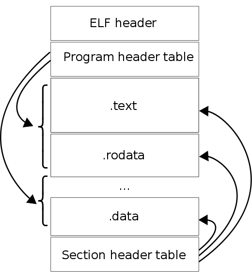
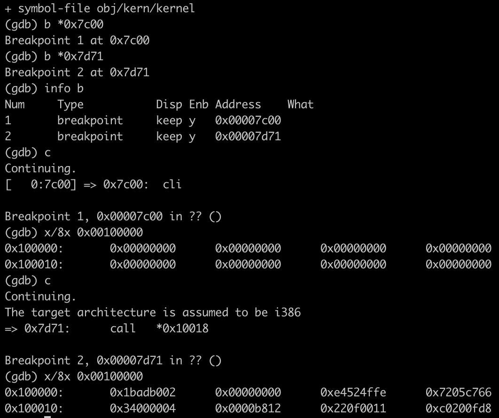
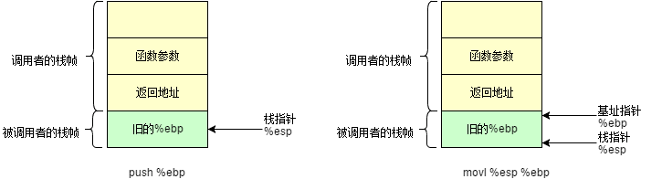
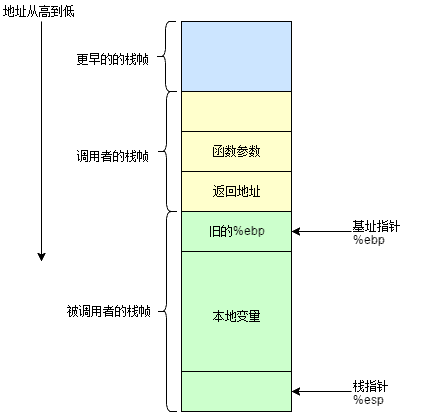
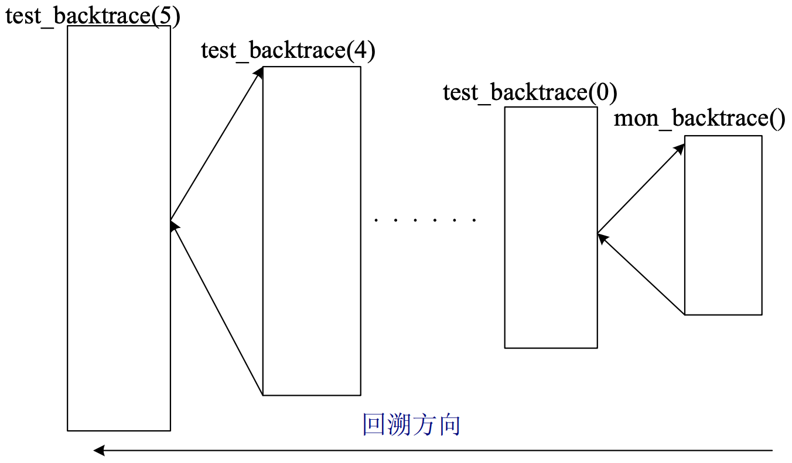
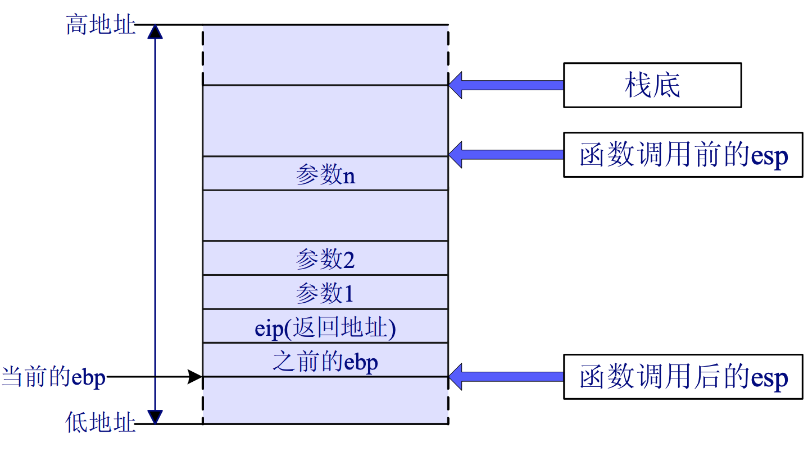
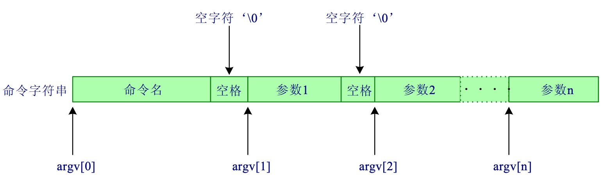
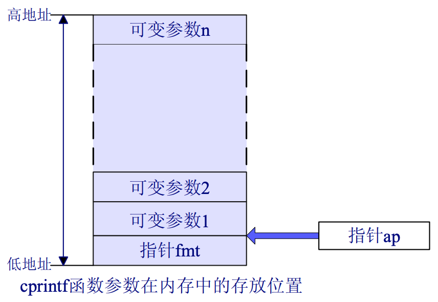

<!DOCTYPE html>
<html lang="en-us">
  <head>
    <meta charset="utf-8">
<meta name="viewport" content="width=device-width, initial-scale=1.0">
<meta name="generator" content="Hugo 0.82.0" />


<title>MIT 6.828 Lab 1 - Booting a PC - 在桥边</title>
<meta property="og:title" content="MIT 6.828 Lab 1 - Booting a PC - 在桥边">


  <link href='https://qiaoin.github.io/favicon.ico' rel='icon' type='image/x-icon'/>


  


<link href='//cdnjs.cloudflare.com/ajax/libs/highlight.js/10.7.1/styles/monokai.min.css' rel='stylesheet' type='text/css' />


<link rel="stylesheet" href="/css/fonts.css" media="all">
<link rel="stylesheet" href="/css/main.css" media="all">
<link rel="stylesheet" href="/css/bootstrap-table.css">

<link rel="stylesheet" href="/css/custom.css">


  </head>
  <body>
    <div class="wrapper">
      <header class="header">
        <nav class="nav">
  <a href="/" class="nav-logo">
    
  </a>

  <ul class="nav-links">
    
    <li><a href="/re-learning-cs/">重学基础</a></li>
    
    <li><a href="/readings/">Readings</a></li>
    
    <li><a href="/about/">About</a></li>
    
    <li><a href="https://github.com/qiaoin">GitHub</a></li>
    
  </ul>
</nav>

      </header>


<main class="content" role="main">

  <article class="article">
    
    

    <h1 class="article-title">MIT 6.828 Lab 1 - Booting a PC</h1>

    
    <span class="article-date">2019-04-07</span>
    

    <div class="article-content">
      <blockquote>
<p>重学操作系统系列，MIT 6.828 课程实验</p>
</blockquote>
<hr>
<div class="toc">
    <details>
        <summary>Table of contents</summary>
        <nav id="TableOfContents">
  <ul>
    <li><a href="#part-1-pc-bootstrap">Part 1: PC Bootstrap</a></li>
    <li><a href="#part-2-the-boot-loader">Part 2: The Boot Loader</a>
      <ul>
        <li><a href="#elf-文件格式">ELF 文件格式</a></li>
        <li><a href="#链接地址和加载地址link-address-and-load-address">链接地址和加载地址（link address and load address）</a></li>
      </ul>
    </li>
    <li><a href="#part-3the-kernel">Part 3：The Kernel</a>
      <ul>
        <li><a href="#cprintf-函数的实现c-语言中常用的-printf-函数"><code>cprintf</code> 函数的实现（C 语言中常用的 <code>printf</code> 函数）</a></li>
        <li><a href="#栈">栈</a></li>
      </ul>
    </li>
    <li><a href="#总结遇到的问题">总结遇到的问题</a></li>
    <li><a href="#references">References</a></li>
    <li><a href="#附录">附录</a>
      <ul>
        <li><a href="#附录-1cprintf-函数的实现">附录 1：<code>cprintf()</code> 函数的实现</a></li>
        <li><a href="#附录-2大端和小端">附录 2：大端和小端</a></li>
        <li><a href="#附录-3bootloader-实模式切换到保护模式">附录 3：<code>bootloader</code> 实模式切换到保护模式</a></li>
      </ul>
    </li>
    <li><a href="#版权声明">版权声明</a></li>
  </ul>
</nav>
    </details>
</div>
<hr>
<blockquote>
<p><a href="https://pdos.csail.mit.edu/6.828/2018/labs/lab1/">Lab1: Booting a PC</a></p>
<ul>
<li>【实验一于2019年4月3日开始做，环境配置及 Exercises，于4月6日完成，初稿报告4月7日】</li>
<li>【2019年11月2日 第一次 review，发现了很多地方描述不清楚，需要补充上学习操作系统遇到的问题，痛点是什么？】</li>
<li>【TODO】完善 lab1 实验笔记，只剩下 ex12 符号表部分内容</li>
</ul>
</blockquote>
<p>实验分为三个部分：</p>
<ul>
<li>1）<code>bootstrap</code> 执行流程，熟悉 x86 汇编，QEMU x86 模拟器，PC&rsquo;s power；</li>
<li>2）<code>lab/boot</code> 目录，bootloader；</li>
<li>3）<code>lab/kernel</code> 目录，JOS 内核初始化模块。</li>
</ul>
<h2 id="part-1-pc-bootstrap">Part 1: PC Bootstrap</h2>
<hr>
<blockquote>
<p><strong>Exercise 1</strong>：熟悉内联汇编。</p>
</blockquote>
<hr>
<p>阅读 <a href="http://www.delorie.com/djgpp/doc/brennan/brennan_att_inline_djgpp.html">Brennan&rsquo;s Guide to Inline Assembly</a>，JOS 里面会使用 AT&amp;T 语法。另外还有更详细的参考资料：</p>
<ul>
<li><a href="https://pdos.csail.mit.edu/6.828/2018/readings/i386/toc.htm">80386 Programmer&rsquo;s Reference Manual</a> 包含在 6.828 中将要使用到的所有处理器特性的介绍；</li>
<li><a href="https://software.intel.com/en-us/articles/intel-sdm">IA-32 Intel Architecture Software Developer&rsquo;s Manuals</a>；</li>
<li><a href="https://developer.amd.com/resources/developer-guides-manuals/">AMD64 Architecture Programmer&rsquo;s Manual</a>；</li>
<li>推荐阅读 <a href="https://www.linuxprobe.com/gcc-how-to.html">最牛 X 的 GCC 内联汇编</a>，查看更完整的内容，整理的内容足够阅读内联汇编代码。</li>
</ul>
<p><strong>【准备工作】为了进行下面的实验，需要进行一些配置</strong>：</p>
<ol>
<li>按照 <a href="https://pdos.csail.mit.edu/6.828/2018/tools.html">Tools Used in 6.828</a> 进行配置，macOS 需要按照网页说明安装定制化的 QEMU 模拟器：
<ul>
<li>安装 QEMU 的依赖文件，<code>brew install $(brew deps qemu)</code>；</li>
<li>安装定制的 QEMU，假设安装在用户主目录下的 <code>~/opt/</code> 下，即 <code>./configure</code> 时指定 <code>--prefix=/Users/xxxx/opt</code>；</li>
<li>Install 步骤 <code>PATH=${PATH}:/usr/local/opt/gettext/bin make install</code>；</li>
</ul>
</li>
<li>安装 <code>i386</code> 相关依赖包 <code>brew install i386-elf-binutils i386-elf-gcc i386-elf-gdb</code>；</li>
<li>不修改各个实验的 Makefile，转而修改用户主目录（<code>~</code>）下的 <code>.zshenv</code> (或者对应的 <code>.bashrc</code>)，这是对当前用户环境变量的全局修改：
<ul>
<li>找到 QEMU 可执行文件，<code>export PATH=&quot;/Users/xxxx/opt/bin:$PATH&quot;</code>；</li>
<li>添加 <code>GCCPREFIX</code>，<code>export GCCPREFIX=&quot;i386-elf-&quot;</code>；</li>
<li>添加 <code>gdb</code> 同名，<code>alias gdb=&quot;i386-elf-gdb&quot;</code>。</li>
</ul>
</li>
</ol>
<hr>
<blockquote>
<p><strong>Exercise 2</strong>：使用 GDB 进行调试，跟踪 ROM BIOS 指令的执行。</p>
</blockquote>
<hr>
<ol>
<li>打开两个终端，<code>cd ~/6.828/lab</code>，到达相同的目录；</li>
<li>一个终端启动 QEMU 模拟器的 GDB 模式执行 <code>make qemu-nox-gdb</code>，QEMU 在第一条指令之前暂停，等待 GDB 的连接；</li>
<li>另一个终端执行 <code>gdb</code>（这里不是如 <a href="https://pdos.csail.mit.edu/6.828/2018/labs/lab1/">Lab 1</a> 官网说明的执行 <code>make gdb</code>，而是执行 <code>gdb</code>，需要注意）。</li>
</ol>
<p>最开始是一条跳转指令，跳转到 <code>0xfe05b</code> 进行执行：</p>
<div class="highlight"><pre style="color:#f8f8f2;background-color:#272822;-moz-tab-size:4;-o-tab-size:4;tab-size:4"><code class="language-c" data-lang="c">[f000:fff0]    <span style="color:#ae81ff">0xffff0</span><span style="color:#f92672">:</span>  ljmp   <span style="color:#960050;background-color:#1e0010">$</span><span style="color:#ae81ff">0xf000</span>,<span style="color:#960050;background-color:#1e0010">$</span><span style="color:#ae81ff">0xe05b</span>  <span style="color:#960050;background-color:#1e0010">#</span> <span style="color:#960050;background-color:#1e0010">跳转指令</span>
</code></pre></div><p>使用 <code>si</code> 单步执行：</p>
<div class="highlight"><pre style="color:#f8f8f2;background-color:#272822;-moz-tab-size:4;-o-tab-size:4;tab-size:4"><code class="language-c" data-lang="c">[f000:d15f]    <span style="color:#ae81ff">0xfd15f</span><span style="color:#f92672">:</span>   cli                    <span style="color:#960050;background-color:#1e0010">#</span> <span style="color:#960050;background-color:#1e0010">关闭中断</span>
[f000:d171]    <span style="color:#ae81ff">0xfd171</span><span style="color:#f92672">:</span>   lidtw  <span style="color:#f92672">%</span>cs:<span style="color:#ae81ff">0x6ab8</span>
[f000:d177]    <span style="color:#ae81ff">0xfd177</span><span style="color:#f92672">:</span>   lgdtw  <span style="color:#f92672">%</span>cs:<span style="color:#ae81ff">0x6a74</span>      <span style="color:#960050;background-color:#1e0010">#</span>
[f000:d17d]    <span style="color:#ae81ff">0xfd17d</span><span style="color:#f92672">:</span>   mov    <span style="color:#f92672">%</span>cr0,<span style="color:#f92672">%</span>eax
[f000:d180]    <span style="color:#ae81ff">0xfd180</span><span style="color:#f92672">:</span>   or     <span style="color:#960050;background-color:#1e0010">$</span><span style="color:#ae81ff">0x1</span>,<span style="color:#f92672">%</span>eax
[f000:d184]    <span style="color:#ae81ff">0xfd184</span><span style="color:#f92672">:</span>   mov    <span style="color:#f92672">%</span>eax,<span style="color:#f92672">%</span>cr0       <span style="color:#960050;background-color:#1e0010">#</span> cr0 <span style="color:#960050;background-color:#1e0010">最低位置</span> <span style="color:#ae81ff">0</span>
</code></pre></div><p>BIOS 建立中断描述符表和初始化一系列硬件设备，进行一些检验工作，之后搜索可启动的设备，<strong>加载该存储设备上的第一个扇区的 512 字节到内存的 0x7C00</strong>（这是 BIOS 固件完成的），然后跳转到 <code>@0x7C00</code> 的第一条指令开始执行（<strong>将控制权转移给 bootloader</strong>）。</p>
<p>设置断点在 <code>0x7c00</code>，<code>b *0x7c00</code>，继续执行 <code>c(ontinue)</code>：</p>
<div class="highlight"><pre style="color:#f8f8f2;background-color:#272822;-moz-tab-size:4;-o-tab-size:4;tab-size:4"><code class="language-c" data-lang="c">[   <span style="color:#ae81ff">0</span><span style="color:#f92672">:</span><span style="color:#ae81ff">7</span>c00] <span style="color:#f92672">=&gt;</span> <span style="color:#ae81ff">0x7c00</span><span style="color:#f92672">:</span>    cli
[   <span style="color:#ae81ff">0</span><span style="color:#f92672">:</span><span style="color:#ae81ff">7</span>c01] <span style="color:#f92672">=&gt;</span> <span style="color:#ae81ff">0x7c01</span><span style="color:#f92672">:</span>    cld

[   <span style="color:#ae81ff">0</span><span style="color:#f92672">:</span><span style="color:#ae81ff">7</span>c1e] <span style="color:#f92672">=&gt;</span> <span style="color:#ae81ff">0x7c1e</span><span style="color:#f92672">:</span>    lgdtw  <span style="color:#ae81ff">0x7c64</span>
[   <span style="color:#ae81ff">0</span><span style="color:#f92672">:</span><span style="color:#ae81ff">7</span>c23] <span style="color:#f92672">=&gt;</span> <span style="color:#ae81ff">0x7c23</span><span style="color:#f92672">:</span>    mov    <span style="color:#f92672">%</span>cr0,<span style="color:#f92672">%</span>eax
[   <span style="color:#ae81ff">0</span><span style="color:#f92672">:</span><span style="color:#ae81ff">7</span>c26] <span style="color:#f92672">=&gt;</span> <span style="color:#ae81ff">0x7c26</span><span style="color:#f92672">:</span>    or     <span style="color:#960050;background-color:#1e0010">$</span><span style="color:#ae81ff">0x1</span>,<span style="color:#f92672">%</span>eax
[   <span style="color:#ae81ff">0</span><span style="color:#f92672">:</span><span style="color:#ae81ff">7</span>c2a] <span style="color:#f92672">=&gt;</span> <span style="color:#ae81ff">0x7c2a</span><span style="color:#f92672">:</span>    mov    <span style="color:#f92672">%</span>eax,<span style="color:#f92672">%</span>cr0
[   <span style="color:#ae81ff">0</span><span style="color:#f92672">:</span><span style="color:#ae81ff">7</span>c2d] <span style="color:#f92672">=&gt;</span> <span style="color:#ae81ff">0x7c2d</span><span style="color:#f92672">:</span>    ljmp   <span style="color:#960050;background-color:#1e0010">$</span><span style="color:#ae81ff">0x8</span>,<span style="color:#960050;background-color:#1e0010">$</span><span style="color:#ae81ff">0x7c32</span>
</code></pre></div><p>执行 <code>x/Ni ADDR</code> 打印从 <code>ADDR</code> 地址开始的连续 <code>N</code> 条汇编指令（以上关于 BIOS 的部分不是 6.828 重点关注的部分，执行时单步跟踪能够看出一点端倪，具体在 lab 实验目录中没有源码对应）。</p>
<h2 id="part-2-the-boot-loader">Part 2: The Boot Loader</h2>
<p><code>bootloader</code> 主要做三件事：</p>
<ul>
<li>1）从实模式（real mode）切换到保护模式（32-bit protected mode）。在实模式下只能寻址 1MB 的内存空间（2^20），在保护模式下能够寻址 4GB（2^32），这样就能够访问处理器全部的物理内存空间；</li>
<li>2）读取内核映像到内存中固定位置，ELF 文件格式（解析 ELF 文件，将内核需要加载进入内存的段 &lt;有 LOAD 标记的段&gt; 加载进内存，放置在指定的加载地址）；</li>
<li>3）把控制权转移给 JOS，即将 <code>CS:EIP</code> 的值指向操作系统内核所在内存中的起始点（<code>.text</code> 段中程序开始执行时的起始地址）。</li>
</ul>
<p>两个源文件代码的阅读：</p>
<ul>
<li><strong><code>boot/boot.S</code></strong>：执行 <code>start</code> 函数，进行一定的初始化，完成从实模式到保护模式的切换（<code>CR0</code> 最低位设置为 1），并调用 <code>bootmain</code> 函数，具体细节参见 <code>bootloader</code> 实模式切换到保护模式（Google 一下）；</li>
<li><strong><code>boot/main.c</code></strong>：<code>bootloader</code> 让 CPU 进入保护模式后，下一步的工作就是<strong>从硬盘上加载并运行 OS</strong>。考虑到实现的简单性，<code>bootloader</code> 访问硬盘都是 LBA 模式 的 <strong>PIO</strong>（Program IO）方式，即<strong>所有的 IO 操作是通过 CPU 访问硬盘的 IO 地址寄存器完成</strong>。当前硬盘数据是储存到硬盘扇区中，一个扇区大小为 512 字节。读一个扇区的流程（可参看 <code>readsect</code> 函数实现，大致理解就可以）大致如下：
<ol>
<li>等待磁盘准备好；</li>
<li>发出读取扇区的命令；</li>
<li>等待磁盘准备好；</li>
<li>把磁盘扇区数据读到指定内存。</li>
</ol>
</li>
</ul>
<p>主要查看 <code>bootmain</code> 函数实现：</p>
<div class="highlight"><pre style="color:#f8f8f2;background-color:#272822;-moz-tab-size:4;-o-tab-size:4;tab-size:4"><code class="language-c" data-lang="c"><span style="color:#75715e">#define SECTSIZE    512                      </span><span style="color:#75715e">// 扇区大小 512 字节
</span><span style="color:#75715e"></span><span style="color:#75715e">#define ELFHDR      ((struct Elf *) 0x10000) </span><span style="color:#75715e">// 将 0x10000 设置为内核起始地址
</span><span style="color:#75715e"></span>
<span style="color:#66d9ef">void</span> <span style="color:#a6e22e">bootmain</span>(<span style="color:#66d9ef">void</span>)
{
    <span style="color:#66d9ef">struct</span> Proghdr <span style="color:#f92672">*</span>ph, <span style="color:#f92672">*</span>eph;

    <span style="color:#75715e">// 从硬盘的第一个扇区（偏移为 0）读取 8*512=4096byte （4KB）的内容到内存单元 ELFHDR 处
</span><span style="color:#75715e"></span>    readseg((uint32_t) ELFHDR, SECTSIZE<span style="color:#f92672">*</span><span style="color:#ae81ff">8</span>, <span style="color:#ae81ff">0</span>);  <span style="color:#75715e">// 1.
</span><span style="color:#75715e"></span>
    <span style="color:#75715e">// is this a valid ELF?
</span><span style="color:#75715e"></span>    <span style="color:#66d9ef">if</span> (ELFHDR<span style="color:#f92672">-&gt;</span>e_magic <span style="color:#f92672">!=</span> ELF_MAGIC)
        <span style="color:#66d9ef">goto</span> bad;

    <span style="color:#75715e">// load each program segment (ignores ph flags)
</span><span style="color:#75715e"></span>    ph <span style="color:#f92672">=</span> (<span style="color:#66d9ef">struct</span> Proghdr <span style="color:#f92672">*</span>) ((uint8_t <span style="color:#f92672">*</span>) ELFHDR <span style="color:#f92672">+</span> ELFHDR<span style="color:#f92672">-&gt;</span>e_phoff);  <span style="color:#75715e">// 2.
</span><span style="color:#75715e"></span>    eph <span style="color:#f92672">=</span> ph <span style="color:#f92672">+</span> ELFHDR<span style="color:#f92672">-&gt;</span>e_phnum;  <span style="color:#75715e">// program header 的个数
</span><span style="color:#75715e"></span>    <span style="color:#66d9ef">for</span> (; ph <span style="color:#f92672">&lt;</span> eph; ph<span style="color:#f92672">++</span>)
        <span style="color:#75715e">// p_pa is the load address of this segment (as well
</span><span style="color:#75715e"></span>        <span style="color:#75715e">// as the physical address)
</span><span style="color:#75715e"></span>        readseg(ph<span style="color:#f92672">-&gt;</span>p_pa, ph<span style="color:#f92672">-&gt;</span>p_memsz, ph<span style="color:#f92672">-&gt;</span>p_offset);  <span style="color:#75715e">// 3.
</span><span style="color:#75715e"></span>
    <span style="color:#75715e">// call the entry point from the ELF header
</span><span style="color:#75715e"></span>    <span style="color:#75715e">// note: does not return!
</span><span style="color:#75715e"></span>    ((<span style="color:#66d9ef">void</span> (<span style="color:#f92672">*</span>)(<span style="color:#66d9ef">void</span>)) (ELFHDR<span style="color:#f92672">-&gt;</span>e_entry))();  <span style="color:#75715e">// 4.
</span><span style="color:#75715e"></span>}
</code></pre></div><p>关键的几行代码已经标注序号，需要结合下面 ELF 文件格式来进行理解。</p>
<ol>
<li>
<p>将 kernel 从磁盘中读取到内存的指定位置 <code>ELFHDR</code>，<code>0x10000</code>；</p>
</li>
<li>
<p>对 <code>ELFHDR</code> 处的 ELF header 进行解析，得到 program header table 的起始地址存放在 <code>ph</code> 中，结束地址存放在 <code>eph</code> 中。这里将 <code>ELFHDR</code> 进行转型为 <code>uint8_t</code> 指针，这样在进行指针加法时，这个指针变量按照 byte 的偏移来加，得到 program header table 的起始地址，并转换为 <code>struct Proghdr</code> 类型指针：</p>
<div class="highlight"><pre style="color:#f8f8f2;background-color:#272822;-moz-tab-size:4;-o-tab-size:4;tab-size:4"><code class="language-c" data-lang="c">ph <span style="color:#f92672">=</span> (<span style="color:#66d9ef">struct</span> Proghdr <span style="color:#f92672">*</span>) ((uint8_t <span style="color:#f92672">*</span>) ELFHDR <span style="color:#f92672">+</span> ELFHDR<span style="color:#f92672">-&gt;</span>e_phoff);
</code></pre></div></li>
<li>
<p>根据每个 program header 的信息从磁盘读取各个段进入内存指定位置，从 <code>ph-&gt;p_offset</code> 处开始拷贝 <code>ph-&gt;p_memsz</code> 个 bytes 到 <code>ph-&gt;p_pa</code>：</p>
<div class="highlight"><pre style="color:#f8f8f2;background-color:#272822;-moz-tab-size:4;-o-tab-size:4;tab-size:4"><code class="language-c" data-lang="c">readseg(ph<span style="color:#f92672">-&gt;</span>p_pa, ph<span style="color:#f92672">-&gt;</span>p_memsz, ph<span style="color:#f92672">-&gt;</span>p_offset);
</code></pre></div></li>
<li>
<p>在将内核加载到内存中后，转移到 entry point 开始执行，即 JOS 开始运行时要执行的第一条指令的地址。这里将 <code>e_entry</code> 转换为一个无参数无返回值的函数，并执行函数调用：</p>
<div class="highlight"><pre style="color:#f8f8f2;background-color:#272822;-moz-tab-size:4;-o-tab-size:4;tab-size:4"><code class="language-c" data-lang="c">((<span style="color:#66d9ef">void</span> (<span style="color:#f92672">*</span>)(<span style="color:#66d9ef">void</span>)) (ELFHDR<span style="color:#f92672">-&gt;</span>e_entry))();
</code></pre></div></li>
</ol>
<hr>
<blockquote>
<p><strong>Exercise 3</strong>：使用 GDB 单步跟踪执行。</p>
</blockquote>
<hr>
<p>设置断点在 <code>0x7c00</code>，<code>b *0x7c00</code>，另外还设置两个断点：</p>
<ul>
<li>1）<code>b *0x7d56</code>，<code>bootmain</code> 函数 <code>for</code> 循环开始处；</li>
<li>2）<code>b *0x7d71</code>，ELF 调用 entry point 处。</li>
</ul>
<p>继续执行 <code>c(ontinue)</code>，就可以看到 <code>for</code> 循环处的断点 hit 3 次（最后一次是判断 <code>for</code> 循环条件不成立），说明根据 ELF header 信息读入了另外 2 个段（<code>.text</code>/<code>.data</code>，可以使用 <code>i386-elf-objdump -x obj/kern/kernel</code> 命令查看到 Program Header）。执行到达 <code>0x7d71</code> 处时，对应汇编指令为：</p>
<div class="highlight"><pre style="color:#f8f8f2;background-color:#272822;-moz-tab-size:4;-o-tab-size:4;tab-size:4"><code class="language-c" data-lang="c"><span style="color:#ae81ff">0x7d71</span><span style="color:#f92672">:</span> call   <span style="color:#f92672">*</span><span style="color:#ae81ff">0x10018</span>
</code></pre></div><p>但 <code>si</code> 单步执行的真实地址为 <code>0x10000c</code>：</p>
<div class="highlight"><pre style="color:#f8f8f2;background-color:#272822;-moz-tab-size:4;-o-tab-size:4;tab-size:4"><code class="language-c" data-lang="c">(gdb) x<span style="color:#f92672">/</span><span style="color:#ae81ff">10</span>i <span style="color:#ae81ff">0x10000c</span>
<span style="color:#f92672">=&gt;</span> <span style="color:#ae81ff">0x10000c</span><span style="color:#f92672">:</span>    movw   <span style="color:#960050;background-color:#1e0010">$</span><span style="color:#ae81ff">0x1234</span>,<span style="color:#ae81ff">0x472</span>
   <span style="color:#ae81ff">0x100015</span><span style="color:#f92672">:</span>    mov    <span style="color:#960050;background-color:#1e0010">$</span><span style="color:#ae81ff">0x110000</span>,<span style="color:#f92672">%</span>eax
   <span style="color:#ae81ff">0x10001a</span><span style="color:#f92672">:</span>    mov    <span style="color:#f92672">%</span>eax,<span style="color:#f92672">%</span>cr3
   <span style="color:#ae81ff">0x10001d</span><span style="color:#f92672">:</span>    mov    <span style="color:#f92672">%</span>cr0,<span style="color:#f92672">%</span>eax
   <span style="color:#ae81ff">0x100020</span><span style="color:#f92672">:</span>    or     <span style="color:#960050;background-color:#1e0010">$</span><span style="color:#ae81ff">0x80010001</span>,<span style="color:#f92672">%</span>eax
   <span style="color:#ae81ff">0x100025</span><span style="color:#f92672">:</span>    mov    <span style="color:#f92672">%</span>eax,<span style="color:#f92672">%</span>cr0
   <span style="color:#ae81ff">0x100028</span><span style="color:#f92672">:</span>    mov    <span style="color:#960050;background-color:#1e0010">$</span><span style="color:#ae81ff">0xf010002f</span>,<span style="color:#f92672">%</span>eax
   <span style="color:#ae81ff">0x10002d</span><span style="color:#f92672">:</span>    jmp    <span style="color:#f92672">*%</span>eax                <span style="color:#f92672">&lt;-</span> <span style="color:#ae81ff">0xf010002f</span> <span style="color:#f92672">&lt;</span>relocated<span style="color:#f92672">&gt;</span>
   <span style="color:#ae81ff">0x10002f</span><span style="color:#f92672">:</span>    mov    <span style="color:#960050;background-color:#1e0010">$</span><span style="color:#ae81ff">0x0</span>,<span style="color:#f92672">%</span>ebp
   <span style="color:#ae81ff">0x100034</span><span style="color:#f92672">:</span>    mov    <span style="color:#960050;background-color:#1e0010">$</span><span style="color:#ae81ff">0xf0110000</span>,<span style="color:#f92672">%</span>esp
</code></pre></div><p>回答以下 4 个问题：</p>
<ol>
<li>
<p>在哪个时间点处理器开始执行 32-bit 代码？导致从 16-bit 切换到 32-bit 的关键操作是什么？</p>
<p>使能保护模式（置 <code>CR0</code> 最低位为 1）和段机制（建立好全局描述符表 <code>GDT</code>）。执行一条长跳转指令 <code>ljmp cs:eip</code> 转而执行 32-bit 模式。</p>
</li>
<li>
<p><code>bootloader</code> 执行的最后一条指令是什么？kernel 在加载之后，执行的第一条指令是什么？</p>
<div class="highlight"><pre style="color:#f8f8f2;background-color:#272822;-moz-tab-size:4;-o-tab-size:4;tab-size:4"><code class="language-c" data-lang="c">call   <span style="color:#f92672">*</span><span style="color:#ae81ff">0x10018</span>
<span style="color:#ae81ff">0x10000c</span><span style="color:#f92672">:</span>  movw   <span style="color:#960050;background-color:#1e0010">$</span><span style="color:#ae81ff">0x1234</span>,<span style="color:#ae81ff">0x472</span>
</code></pre></div><p>这两个地址不相同，这是为什么？因为开启了<strong>分页机制</strong>，虚拟地址与物理地址之间的映射关系已建立好。</p>
</li>
<li>
<p>kernel 执行的第一条指令的地址是多少？</p>
<p><code>0x10000c</code></p>
</li>
<li>
<p>为了将整个 kernel 从磁盘加载到内存中，<code>bootloader</code> 是如何确定需要读入的扇区数目的？这些信息存储在哪里？</p>
<div class="highlight"><pre style="color:#f8f8f2;background-color:#272822;-moz-tab-size:4;-o-tab-size:4;tab-size:4"><code class="language-c" data-lang="c"><span style="color:#75715e">// load each program segment (ignores ph flags)
</span><span style="color:#75715e"></span>ph <span style="color:#f92672">=</span> (<span style="color:#66d9ef">struct</span> Proghdr <span style="color:#f92672">*</span>) ((uint8_t <span style="color:#f92672">*</span>) ELFHDR <span style="color:#f92672">+</span> ELFHDR<span style="color:#f92672">-&gt;</span>e_phoff);  <span style="color:#75715e">// ii
</span><span style="color:#75715e"></span>eph <span style="color:#f92672">=</span> ph <span style="color:#f92672">+</span> ELFHDR<span style="color:#f92672">-&gt;</span>e_phnum;

<span style="color:#66d9ef">for</span> (; ph <span style="color:#f92672">&lt;</span> eph; ph<span style="color:#f92672">++</span>)
    <span style="color:#75715e">// p_pa is the load address of this segment (as well
</span><span style="color:#75715e"></span>    <span style="color:#75715e">// as the physical address)
</span><span style="color:#75715e"></span>    readseg(ph<span style="color:#f92672">-&gt;</span>p_pa, ph<span style="color:#f92672">-&gt;</span>p_memsz, ph<span style="color:#f92672">-&gt;</span>p_offset);  <span style="color:#75715e">// 3.
</span></code></pre></div><p>在 ELF 文件的 program header 中包含总共需要读取的数据大小，同时对于需加载进内存中的各个段，也标注了在磁盘上的偏移位置和大小。</p>
</li>
</ol>
<hr>
<blockquote>
<p><strong>Exercise 4</strong>：C 语言中的指针。</p>
</blockquote>
<hr>
<p>C 程序设计语言 第 5 章 数组与指针 5.1 - 5.5（待读，之前已经看过好几遍了）。</p>
<h3 id="elf-文件格式">ELF 文件格式</h3>
<blockquote>
<p>（没有很明白，20191102晚上11点57分）</p>
</blockquote>
<p>ELF header + 待加载的信息（包含连续的多个段，数据段和代码段等，这些段需要从磁盘加载到内存的指定地址）。<code>bootloader</code> 不会去修改数据段和代码段，只是将它们加载进内存，然后将控制权转移给这些程序进行执行。</p>
<p>ELF header 长度固定（fixed-length），后跟可变长度（variable-length）的 program header，列出了要加载的各个程序段（program sections）。<code>inc/elf.h</code> 定义了 <code>ELF header</code>：</p>
<div class="highlight"><pre style="color:#f8f8f2;background-color:#272822;-moz-tab-size:4;-o-tab-size:4;tab-size:4"><code class="language-c" data-lang="c"><span style="color:#66d9ef">struct</span> Elf {            <span style="color:#75715e">// ELF 文件头
</span><span style="color:#75715e"></span>    uint32_t e_magic;   <span style="color:#75715e">// must equal ELF_MAGIC
</span><span style="color:#75715e"></span>    uint8_t e_elf[<span style="color:#ae81ff">12</span>];
    uint16_t e_type;
    uint16_t e_machine;
    uint32_t e_version;
    uint32_t e_entry;   <span style="color:#75715e">// 程序开始执行的起始地址
</span><span style="color:#75715e"></span>    uint32_t e_phoff;   <span style="color:#75715e">// program header table 的起始位置
</span><span style="color:#75715e"></span>    uint32_t e_shoff;   <span style="color:#75715e">// section header 的起始位置
</span><span style="color:#75715e"></span>    uint32_t e_flags;
    uint16_t e_ehsize;  <span style="color:#75715e">// ELF 文件本身的大小
</span><span style="color:#75715e"></span>    uint16_t e_phentsize;
    uint16_t e_phnum;   <span style="color:#75715e">// program header 的个数
</span><span style="color:#75715e"></span>    uint16_t e_shentsize;
    uint16_t e_shnum;
    uint16_t e_shstrndx;
};

<span style="color:#66d9ef">struct</span> Proghdr {        <span style="color:#75715e">// program header table
</span><span style="color:#75715e"></span>    uint32_t p_type;
    uint32_t p_offset;
    uint32_t p_va;      <span style="color:#75715e">// 虚拟地址
</span><span style="color:#75715e"></span>    uint32_t p_pa;      <span style="color:#75715e">// 物理地址
</span><span style="color:#75715e"></span>    uint32_t p_filesz;  <span style="color:#75715e">// 段在文件中的大小
</span><span style="color:#75715e"></span>    uint32_t p_memsz;   <span style="color:#75715e">// 段在内存中的大小
</span><span style="color:#75715e"></span>    uint32_t p_flags;   <span style="color:#75715e">// 读写执行权限
</span><span style="color:#75715e"></span>    uint32_t p_align;
};
</code></pre></div><p>【TODO】这里为什么需要 <code>p_filesz</code>、<code>p_memsz</code> 两个长度呢？在之后会介绍到，<code>.bss</code> 在磁盘上没有存储空间，在内存中程序需要为其分配空间。</p>
<p><code>bootloader</code> 利用 ELF program header 来决定如何加载各 program sections，而 program header 指定应该读取 ELF 对象的哪个部分进内存，以及应该放在哪里。</p>
<p></p>
<p>在 6.828 实验中将用到的 program sections：</p>
<ul>
<li><strong><code>.text</code></strong>：代码段。程序的可执行指令；</li>
<li><code>.rodata</code>：只读数据段。例如 C 编译器产生的 ASCII 字符串常量；</li>
<li><strong><code>.stab</code></strong>：符号表部分，在程序报错时提供错误信息；</li>
<li><strong><code>.stabstr</code></strong>：符号表字符串部分；</li>
<li><strong><code>.data</code></strong>：数据段。已初始化的全局变量和局部静态变量；</li>
<li><code>.bss</code>：为未初始化的全局变量和局部静态变量预留位置，但并没有内容，因此在文件中也不占据磁盘空间（因此需要 <code>p_filesz</code>、<code>p_memsz</code> 两个长度）。由于未初始化的全局变量和局部静态变量默认值都是 0，本来它们也可以被放在 <code>.data</code> 段里，但是因为它们都是 0，为它们在 <code>.data</code> 段分配空间并存放数据 0 是没有必要的；</li>
<li>&hellip;</li>
</ul>
<div class="highlight"><pre style="color:#f8f8f2;background-color:#272822;-moz-tab-size:4;-o-tab-size:4;tab-size:4"><code class="language-c" data-lang="c">i386<span style="color:#f92672">-</span>elf<span style="color:#f92672">-</span>objdump <span style="color:#f92672">-</span>h obj<span style="color:#f92672">/</span>kern<span style="color:#f92672">/</span>kernel

obj<span style="color:#f92672">/</span>kern<span style="color:#f92672">/</span>kernel:     file format elf32<span style="color:#f92672">-</span>i386
Sections:
Idx Name          Size      VMA       LMA       File off  Algn
  <span style="color:#ae81ff">0</span> .text         <span style="color:#ae81ff">0000171</span>e  f0100000  <span style="color:#ae81ff">00100000</span>  <span style="color:#ae81ff">00001000</span>  <span style="color:#ae81ff">2</span><span style="color:#f92672">**</span><span style="color:#ae81ff">2</span>
                  CONTENTS, ALLOC, LOAD, READONLY, CODE
  <span style="color:#ae81ff">1</span> .rodata       <span style="color:#ae81ff">00000714</span>  f0101720  <span style="color:#ae81ff">00101720</span>  <span style="color:#ae81ff">00002720</span>  <span style="color:#ae81ff">2</span><span style="color:#f92672">**</span><span style="color:#ae81ff">5</span>
                  CONTENTS, ALLOC, LOAD, READONLY, DATA
  <span style="color:#ae81ff">2</span> .stab         <span style="color:#ae81ff">000040</span>ed  f0101e34  <span style="color:#ae81ff">00101e34</span>  <span style="color:#ae81ff">00002e34</span>  <span style="color:#ae81ff">2</span><span style="color:#f92672">**</span><span style="color:#ae81ff">2</span>
                  CONTENTS, ALLOC, LOAD, READONLY, DATA
  <span style="color:#ae81ff">3</span> .stabstr      <span style="color:#ae81ff">00001</span><span style="color:#ae81ff">957</span>  f0105f21  <span style="color:#ae81ff">00105f</span><span style="color:#ae81ff">21</span>  <span style="color:#ae81ff">00006f</span><span style="color:#ae81ff">21</span>  <span style="color:#ae81ff">2</span><span style="color:#f92672">**</span><span style="color:#ae81ff">0</span>
                  CONTENTS, ALLOC, LOAD, READONLY, DATA
  <span style="color:#ae81ff">4</span> .data         <span style="color:#ae81ff">0000</span>a300  f0108000  <span style="color:#ae81ff">0010</span><span style="color:#ae81ff">8000</span>  <span style="color:#ae81ff">0000</span><span style="color:#ae81ff">9000</span>  <span style="color:#ae81ff">2</span><span style="color:#f92672">**</span><span style="color:#ae81ff">12</span>
                  CONTENTS, ALLOC, LOAD, DATA
  <span style="color:#ae81ff">5</span> .bss          <span style="color:#ae81ff">0000064</span><span style="color:#ae81ff">8</span>  f0112300  <span style="color:#ae81ff">00112300</span>  <span style="color:#ae81ff">00013300</span>  <span style="color:#ae81ff">2</span><span style="color:#f92672">**</span><span style="color:#ae81ff">5</span>
                  CONTENTS, ALLOC, LOAD, DATA
  <span style="color:#ae81ff">6</span> .debug ......
  ......
</code></pre></div><p>得到 ELF 文件各个段的基本信息，可以知道很多段都是 Debug 信息（program loader 不会将这些段加载进内存）。</p>
<p>查看更详细的信息：</p>
<div class="highlight"><pre style="color:#f8f8f2;background-color:#272822;-moz-tab-size:4;-o-tab-size:4;tab-size:4"><code class="language-c" data-lang="c">i386<span style="color:#f92672">-</span>elf<span style="color:#f92672">-</span>objdump <span style="color:#f92672">-</span>x obj<span style="color:#f92672">/</span>kern<span style="color:#f92672">/</span>kernel

obj<span style="color:#f92672">/</span>kern<span style="color:#f92672">/</span>kernel:     file format elf32<span style="color:#f92672">-</span>i386
obj<span style="color:#f92672">/</span>kern<span style="color:#f92672">/</span>kernel
architecture: i386, flags <span style="color:#ae81ff">0x00000112</span><span style="color:#f92672">:</span>
EXEC_P, HAS_SYMS, D_PAGED
start address <span style="color:#ae81ff">0x0010000c</span>

Program Header:
    LOAD off    <span style="color:#ae81ff">0x00001000</span> vaddr <span style="color:#ae81ff">0xf0100000</span> paddr <span style="color:#ae81ff">0x00100000</span> align <span style="color:#ae81ff">2</span><span style="color:#f92672">**</span><span style="color:#ae81ff">12</span>
         filesz <span style="color:#ae81ff">0x00007878</span> memsz <span style="color:#ae81ff">0x00007878</span> flags r<span style="color:#f92672">-</span>x
    LOAD off    <span style="color:#ae81ff">0x00009000</span> vaddr <span style="color:#ae81ff">0xf0108000</span> paddr <span style="color:#ae81ff">0x00108000</span> align <span style="color:#ae81ff">2</span><span style="color:#f92672">**</span><span style="color:#ae81ff">12</span>
         filesz <span style="color:#ae81ff">0x0000a948</span> memsz <span style="color:#ae81ff">0x0000a948</span> flags rw<span style="color:#f92672">-</span>

Sections:
Idx Name          Size      VMA       LMA       File off  Algn
  <span style="color:#ae81ff">0</span> .text         <span style="color:#ae81ff">0000171</span>e  f0100000  <span style="color:#ae81ff">00100000</span>  <span style="color:#ae81ff">00001000</span>  <span style="color:#ae81ff">2</span><span style="color:#f92672">**</span><span style="color:#ae81ff">2</span>
                  CONTENTS, ALLOC, LOAD, READONLY, CODE
  <span style="color:#ae81ff">1</span> .rodata       ...
  <span style="color:#ae81ff">2</span> .stab         ...
  <span style="color:#ae81ff">3</span> .stabstr      ...
  <span style="color:#ae81ff">4</span> .data         <span style="color:#ae81ff">0000</span>a300  f0108000  <span style="color:#ae81ff">0010</span><span style="color:#ae81ff">8000</span>  <span style="color:#ae81ff">0000</span><span style="color:#ae81ff">9000</span>  <span style="color:#ae81ff">2</span><span style="color:#f92672">**</span><span style="color:#ae81ff">12</span>
                  CONTENTS, ALLOC, LOAD, DATA
  ......
</code></pre></div><p>对于内核映像，其链接地址和加载地址不同，内核希望 <code>bootloader</code> 将其加载到低物理地址处（<strong><code>0x00100000</code></strong> 最下面的 <code>1MB</code> 处），但是期望在高地址（虚拟地址）处进行执行（<strong><code>0xf0100000</code></strong>）。这里带标识 <code>LOAD</code> 的 Program Header 段（可能一个段包含多个 Sections，<code>.data</code>/<code>.text</code>/etc.），即多个 Sections 被同时加载进入内存。</p>
<h3 id="链接地址和加载地址link-address-and-load-address">链接地址和加载地址（link address and load address）</h3>
<p>我们关注 <code>.text</code> 段的 <code>VMA</code>(or link address，虚拟地址) 和 <code>LMA</code>(or load address，物理地址)。段的 <code>LMA</code>(load address)指定了将这个段加载进内存时需要放置的物理地址。段的 <code>VMA</code>(link address)指定了程序执行时这个段需要放置在内存中的虚拟地址。为了保证程序能够正常的执行，需要进行链接。</p>
<p><strong>链接地址实际上就是程序假设自己在内存中被存放的位置，即编译器在编译的时候会认定程序将会连续的存放在从链接地址起始处开始的内存空间。而加载地址是可执行程序在物理内存中真正存放的位置</strong>，在 JOS 中，<code>bootloader</code> 是被 BIOS 装载到内存的，由于 BIOS 实际上规定 <code>bootloader</code> 要被存放在物理内存的 <code>0x7c00</code> 处，于是不论程序的链接地址怎么改变，它装载在内存中的位置（加载地址）都不会变化。</p>
<p><strong>链接地址是指令运行时的地址，加载地址是指令加载到内存中的地址。实模式下这两个地址是一样的，因为没有开启分页机制，指令执行的时候就没有地址映射关系</strong>。</p>
<p>我们可以看到 <code>bootloader</code> 的链接地址和加载地址是相等的，为 <code>0x7c00</code>：</p>
<div class="highlight"><pre style="color:#f8f8f2;background-color:#272822;-moz-tab-size:4;-o-tab-size:4;tab-size:4"><code class="language-c" data-lang="c">i386<span style="color:#f92672">-</span>elf<span style="color:#f92672">-</span>objdump <span style="color:#f92672">-</span>h obj<span style="color:#f92672">/</span>boot<span style="color:#f92672">/</span>boot.out

obj<span style="color:#f92672">/</span>boot<span style="color:#f92672">/</span>boot.out:     file format elf32<span style="color:#f92672">-</span>i386
Sections:
Idx Name          Size      VMA       LMA       File off  Algn
  <span style="color:#ae81ff">0</span> .text         <span style="color:#ae81ff">000001</span><span style="color:#ae81ff">8</span>c  <span style="color:#ae81ff">00007</span>c00  <span style="color:#ae81ff">00007</span>c00  <span style="color:#ae81ff">00000054</span>  <span style="color:#ae81ff">2</span><span style="color:#f92672">**</span><span style="color:#ae81ff">2</span>
                  CONTENTS, ALLOC, LOAD, CODE
  <span style="color:#ae81ff">1</span> .eh_frame     <span style="color:#ae81ff">000000</span><span style="color:#ae81ff">9</span>c  <span style="color:#ae81ff">00007</span>d8c  <span style="color:#ae81ff">00007</span>d8c  <span style="color:#ae81ff">000001e0</span>  <span style="color:#ae81ff">2</span><span style="color:#f92672">**</span><span style="color:#ae81ff">2</span>
                  CONTENTS, ALLOC, LOAD, READONLY, DATA
  <span style="color:#ae81ff">2</span> .stab         <span style="color:#ae81ff">00000744</span>  <span style="color:#ae81ff">00000000</span>  <span style="color:#ae81ff">00000000</span>  <span style="color:#ae81ff">0000027</span>c  <span style="color:#ae81ff">2</span><span style="color:#f92672">**</span><span style="color:#ae81ff">2</span>
                  CONTENTS, READONLY, DEBUGGING
  <span style="color:#ae81ff">3</span> .stabstr      <span style="color:#ae81ff">000008e1</span>  <span style="color:#ae81ff">00000000</span>  <span style="color:#ae81ff">00000000</span>  <span style="color:#ae81ff">00000</span><span style="color:#ae81ff">9</span>c0  <span style="color:#ae81ff">2</span><span style="color:#f92672">**</span><span style="color:#ae81ff">0</span>
                  CONTENTS, READONLY, DEBUGGING
  <span style="color:#ae81ff">4</span> .comment      <span style="color:#ae81ff">00000011</span>  <span style="color:#ae81ff">00000000</span>  <span style="color:#ae81ff">00000000</span>  <span style="color:#ae81ff">000012</span>a1  <span style="color:#ae81ff">2</span><span style="color:#f92672">**</span><span style="color:#ae81ff">0</span>
                  CONTENTS, READONLY
</code></pre></div><hr>
<blockquote>
<p><strong>Exercise 5</strong>：修改 <code>boot/Makefrag</code>，将 bootloader 的 link address 改为非 <code>0x7c00</code> 的数值，看看会出现什么问题？</p>
</blockquote>
<hr>
<p>在 <code>boot/Makefrag</code> 中指定了 <code>bootloader</code> 的链接地址 <code>-Ttext 0x7C00</code>，现在我们将链接地址修改为 <code>0x8C00</code>，重新编译：</p>
<ol>
<li>设置断点 <code>b *0x7c00</code>，BIOS 一定会将 <code>bootloader</code> 加载到这个位置；</li>
<li><code>si</code> 单步跟踪执行，执行到 <code>0x7c2d: ljmp $0x8,$0x8c32</code> 指令时发生错误；</li>
<li>查看编译同时生成的反汇编文件 <code>obj/boot/boot.asm</code>，其中显示了汇编指令和相应的链接地址，由于我们修改了 bootloader 的链接地址为 <code>0x8c00</code>，<code>“ljmp   $0x8,$0x8c32”</code> 这条指令在 <code>boot.asm</code> 文件中显示的实际汇编地址为 <code>0x8c2d</code>，其后的 <code>protcseg</code> 标识的指令的链接地址为 <code>0x8c32</code>，即 <code>si</code> 单步执行到 <code>0x8c2d</code> 处需要跳转到的标识符地址；</li>
<li>CPU 报错？为什么会报错呢？链接是怎么做的？</li>
</ol>
<p><code>VMA</code>/<code>LMA</code> 是给加载器做参考，告诉加载器“需要将某个段加载到某某地址”，但现在连操作系统都还没有运行起来，更不会有加载器。因此，<code>bootloader</code> 的源代码还是会被加载到内存的 <code>0x7c00</code> 处（因为 BIOS 在 ROM，里面的程序代码是在出厂时就已经规定好了的，将磁盘的第一个扇区加载到内存的 <code>0x7c00</code> 处）。链接最重要的一步是符号重定位（symbol relocation），在源代码 <code>boot/boot.S</code> 中：</p>
<div class="highlight"><pre style="color:#f8f8f2;background-color:#272822;-moz-tab-size:4;-o-tab-size:4;tab-size:4"><code class="language-c" data-lang="c">  <span style="color:#75715e"># Jump to next instruction, but in 32-bit code segment.
</span><span style="color:#75715e"></span>  <span style="color:#75715e"># Switches processor into 32-bit mode.
</span><span style="color:#75715e"></span>  ljmp    <span style="color:#960050;background-color:#1e0010">$</span>PROT_MODE_CSEG, <span style="color:#960050;background-color:#1e0010">$</span>protcseg
  .code32                     <span style="color:#960050;background-color:#1e0010">#</span> Assemble <span style="color:#66d9ef">for</span> <span style="color:#ae81ff">32</span><span style="color:#f92672">-</span>bit mode
protcseg:
  <span style="color:#75715e"># Set up the protected-mode data segment registers
</span></code></pre></div><p>这里的 <code>protcseg</code> 符号（symbol）用来标记位置，可以是一段子程序的起始地址，也可以是一个变量的起始地址。在这里 <code>protcseg</code> 表示一段程序的起始地址，在编译生成可重定位目标文件（relocatable object file）时其值是不确定的。在链接时，链接器会对这些符号进行替换（因为程序已经链接好了）。</p>
<p>现在的问题是，链接器按照 <code>0x8C00</code> 的链接起始地址对这些符号进行替换，但 BIOS 还是将 bootloader 读到了内存中的 <code>0x7C00</code> 处，实模式下（仅开启了段机制），加载地址和链接地址应该是相同的。而现在，<code>ljmp</code> 指令要跳转到 <code>0x8c32</code> 处，本来应该跳转到下一条指令 <code>0x7c32</code> 处。【TODO 需要更加细致的分析！】</p>
<div class="highlight"><pre style="color:#f8f8f2;background-color:#272822;-moz-tab-size:4;-o-tab-size:4;tab-size:4"><code class="language-c" data-lang="c">(gdb) x<span style="color:#f92672">/</span><span style="color:#ae81ff">10</span>i <span style="color:#ae81ff">0x7c1e</span>
   <span style="color:#ae81ff">0x7c1e</span><span style="color:#f92672">:</span> lgdtw  <span style="color:#f92672">-</span><span style="color:#ae81ff">0x739c</span>
   <span style="color:#ae81ff">0x7c23</span><span style="color:#f92672">:</span> mov    <span style="color:#f92672">%</span>cr0,<span style="color:#f92672">%</span>eax
   <span style="color:#ae81ff">0x7c26</span><span style="color:#f92672">:</span> or     <span style="color:#960050;background-color:#1e0010">$</span><span style="color:#ae81ff">0x1</span>,<span style="color:#f92672">%</span>eax
   <span style="color:#ae81ff">0x7c2a</span><span style="color:#f92672">:</span> mov    <span style="color:#f92672">%</span>eax,<span style="color:#f92672">%</span>cr0
<span style="color:#f92672">=&gt;</span> <span style="color:#ae81ff">0x7c2d</span><span style="color:#f92672">:</span> ljmp   <span style="color:#960050;background-color:#1e0010">$</span><span style="color:#ae81ff">0x8</span>,<span style="color:#960050;background-color:#1e0010">$</span><span style="color:#ae81ff">0x8c32</span>
   <span style="color:#ae81ff">0x7c32</span><span style="color:#f92672">:</span> mov    <span style="color:#960050;background-color:#1e0010">$</span><span style="color:#ae81ff">0xd88e0010</span>,<span style="color:#f92672">%</span>eax
   <span style="color:#ae81ff">0x7c38</span><span style="color:#f92672">:</span> mov    <span style="color:#f92672">%</span>ax,<span style="color:#f92672">%</span>es
   <span style="color:#ae81ff">0x7c3a</span><span style="color:#f92672">:</span> mov    <span style="color:#f92672">%</span>ax,<span style="color:#f92672">%</span>fs
   <span style="color:#ae81ff">0x7c3c</span><span style="color:#f92672">:</span> mov    <span style="color:#f92672">%</span>ax,<span style="color:#f92672">%</span>gs
   <span style="color:#ae81ff">0x7c3e</span><span style="color:#f92672">:</span> mov    <span style="color:#f92672">%</span>ax,<span style="color:#f92672">%</span>ss
</code></pre></div><hr>
<blockquote>
<p><strong>Exercise 6</strong>：执行 <code>x/Nx ADDR</code> 打印从 <code>ADDR</code> 开始的 <code>N</code> 个 word（在 GNU 汇编标准中，1 word = 2 bytes）。在两个不同的时刻检查 <code>0x00100000</code> 出的 8 个 word，1）BIOS 将控制权转移给 <code>bootloader</code> 和 2）<code>bootloader</code> 将 JOS 内核映像读入内存之后，将控制权转移给 JOS（entry point），有什么不一样，并且为什么这 8 个 word 会不一样？</p>
</blockquote>
<hr>
<ol>
<li>关闭 QEMU 和 GDB，重新运行；</li>
<li>设置断点 <code>b *0x7c00</code>（BIOS 将控制权转移给 <code>bootloader</code>）和 <code>b *0x7d71</code>（<code>bootloader</code> 将控制权转移给 JOS）。</li>
</ol>
<p></p>
<p>前后两次执行 <code>x/Nx ADDR</code> 结果不一样，第二次是因为我们使用 <code>bootloader</code> 将 JOS 的程序段（Program Header 中有 <code>LOAD</code> 标记的段）加载到了 <code>0x100000</code> 处，因此，从 <code>0x100000</code> 开始都存放着 <strong>JOS 内核映像</strong>。</p>
<h2 id="part-3the-kernel">Part 3：The Kernel</h2>
<p>操作系统内核一般链接地址都比较大，会选择在高虚拟地址空间上运行，将低虚拟地址空间留给用户程序使用（在 Lab2 中会进行更清晰的解释）。</p>
<p>很多机器的物理内存空间地址都不会到达 <strong><code>0xf010002f</code></strong>，因此 JOS 内核映像不会真实存储于此，而是，我们使用处理器的内存管理硬件（memory management hardware）将高虚拟地址空间 <strong><code>0xf0100000</code></strong>（内核的链接地址，期望运行的虚拟地址）映射到实际的低物理地址空间 <strong><code>0x00100000</code></strong>（内核的加载地址，<code>bootloader</code> 将内核映像加载进内存中的地址），<code>bootloader</code> 加载磁盘上的内核映像存放在内存中的地址为 <strong><code>0x00100000</code></strong>（刚好在 BIOS ROM 的上面，从 1MB 地址往上），可以查看命令 <code>i386-elf-objdump -x obj/kern/kernel</code> 的返回内容。</p>
<p><code>kern/entrypgdir.c</code> 中已经建立好了虚拟地址和物理地址的映射关系 <code>entry_pgdir</code>：</p>
<ul>
<li>Map VA&rsquo;s [0, 4MB) to PA&rsquo;s [0, 4MB)</li>
<li>Map VA&rsquo;s [<code>KERNBASE</code>, <code>KERNBASE</code>+4MB) to PA&rsquo;s [0, 4MB) 其中，<code>KERNBASE=0xF0000000</code></li>
</ul>
<p>在 <code>kern/entry.S</code> 中会对 <code>CR0_PG</code> flag 进行设置，在此设置之前，代码中对内存的引用（memory references）都会被解释为物理地址（更准确的说是线性地址，在 <code>boot/boot.S</code> 中仅开启段机制，线性地址与物理地址相等），当对 <code>CR0_PG</code> 设置之后，对内存的引用将被解释为虚拟地址（即开启页机制），再由 <code>entry_pgdir</code> 翻译为对应的物理地址：</p>
<ul>
<li>将 <code>0xf0000000 ~ 0xf0400000</code> 虚拟地址翻译为对应的物理地址 <code>0x00000000 ~ 0x00400000</code></li>
<li>将 <code>0x00000000 ~ 0x00400000</code> 虚拟地址翻译为对应的物理地址 <code>0x00000000 ~ 0x00400000</code></li>
</ul>
<p>在内核被加载到内存后系统便立即跳转开始执行 <code>kern/entry.S</code> 的代码，这个文件中的程序相当于内核的入口程序：</p>
<div class="highlight"><pre style="color:#f8f8f2;background-color:#272822;-moz-tab-size:4;-o-tab-size:4;tab-size:4"><code class="language-c" data-lang="c">.globl      _start
_start <span style="color:#f92672">=</span> RELOC(entry)

.globl entry
entry:
    movw    <span style="color:#960050;background-color:#1e0010">$</span><span style="color:#ae81ff">0x1234</span>,<span style="color:#ae81ff">0x472</span>           <span style="color:#960050;background-color:#1e0010">#</span> warm boot

    <span style="color:#75715e"># We haven&#39;t set up virtual memory yet, so we&#39;re running from
</span><span style="color:#75715e"></span>    <span style="color:#75715e"># the physical address the boot loader loaded the kernel at: 1MB
</span><span style="color:#75715e"></span>    <span style="color:#75715e"># (plus a few bytes).  However, the C code is linked to run at
</span><span style="color:#75715e"></span>    <span style="color:#75715e"># KERNBASE+1MB.  Hence, we set up a trivial page directory that
</span><span style="color:#75715e"></span>    <span style="color:#75715e"># translates virtual addresses [KERNBASE, KERNBASE+4MB) to
</span><span style="color:#75715e"></span>    <span style="color:#75715e"># physical addresses [0, 4MB).  This 4MB region will be
</span><span style="color:#75715e"></span>    <span style="color:#75715e"># sufficient until we set up our real page table in mem_init
</span><span style="color:#75715e"></span>    <span style="color:#75715e"># in lab 2.
</span><span style="color:#75715e"></span>
    <span style="color:#75715e"># Load the physical address of entry_pgdir into cr3.  entry_pgdir
</span><span style="color:#75715e"></span>    <span style="color:#75715e"># is defined in entrypgdir.c.
</span><span style="color:#75715e"></span>    movl    <span style="color:#960050;background-color:#1e0010">$</span>(RELOC(entry_pgdir)), <span style="color:#f92672">%</span>eax
    movl    <span style="color:#f92672">%</span>eax, <span style="color:#f92672">%</span>cr3
    <span style="color:#75715e"># Turn on paging. 开启页机制
</span><span style="color:#75715e"></span>    movl    <span style="color:#f92672">%</span>cr0, <span style="color:#f92672">%</span>eax
    orl <span style="color:#960050;background-color:#1e0010">$</span>(CR0_PE<span style="color:#f92672">|</span>CR0_PG<span style="color:#f92672">|</span>CR0_WP), <span style="color:#f92672">%</span>eax
    movl    <span style="color:#f92672">%</span>eax, <span style="color:#f92672">%</span>cr0

    <span style="color:#75715e"># Now paging is enabled, but we&#39;re still running at a low EIP
</span><span style="color:#75715e"></span>    <span style="color:#75715e"># (why is this okay?).  Jump up above KERNBASE before entering
</span><span style="color:#75715e"></span>    <span style="color:#75715e"># C code.
</span><span style="color:#75715e"></span>    mov <span style="color:#960050;background-color:#1e0010">$</span>relocated, <span style="color:#f92672">%</span>eax  <span style="color:#960050;background-color:#1e0010">#</span> <span style="color:#960050;background-color:#1e0010">$</span>relocated <span style="color:#960050;background-color:#1e0010">为链接地址，因此需要重定位</span>
    jmp <span style="color:#f92672">*%</span>eax
relocated:

    <span style="color:#75715e"># Clear the frame pointer register (EBP)
</span><span style="color:#75715e"></span>    <span style="color:#75715e"># so that once we get into debugging C code,
</span><span style="color:#75715e"></span>    <span style="color:#75715e"># stack backtraces will be terminated properly.
</span><span style="color:#75715e"></span>    movl    <span style="color:#960050;background-color:#1e0010">$</span><span style="color:#ae81ff">0x0</span>,<span style="color:#f92672">%</span>ebp           <span style="color:#960050;background-color:#1e0010">#</span> nuke frame pointer

    <span style="color:#75715e"># Set the stack pointer
</span><span style="color:#75715e"></span>    movl    <span style="color:#960050;background-color:#1e0010">$</span>(bootstacktop),<span style="color:#f92672">%</span>esp

    <span style="color:#75715e"># now to C code
</span><span style="color:#75715e"></span>    call    i386_init
</code></pre></div><hr>
<blockquote>
<p><strong>Exercise 7</strong>：使用 QEMU 和 GDB 单步跟踪 JOS，执行到 <code>movl %eax, %cr0</code>，检查在执行这条汇编指令前后内存单元 <code>0x00100000</code> 和 <code>0xf0100000</code> 的内容。</p>
</blockquote>
<hr>
<ol>
<li>设置断点 <code>b *0x7d71</code>（<code>bootloader</code> 将控制权转移给 JOS）；</li>
<li><code>si</code> 单步跟踪执行。</li>
</ol>
<div class="highlight"><pre style="color:#f8f8f2;background-color:#272822;-moz-tab-size:4;-o-tab-size:4;tab-size:4"><code class="language-c" data-lang="c"><span style="color:#f92672">=&gt;</span> <span style="color:#ae81ff">0x100025</span><span style="color:#f92672">:</span>    mov    <span style="color:#f92672">%</span>eax,<span style="color:#f92672">%</span>cr0
(gdb) x<span style="color:#f92672">/</span><span style="color:#ae81ff">8</span>x <span style="color:#ae81ff">0x00100000</span>
<span style="color:#ae81ff">0x100000</span><span style="color:#f92672">:</span>                       <span style="color:#ae81ff">0x1badb002</span> <span style="color:#ae81ff">0x00000000</span> <span style="color:#ae81ff">0xe4524ffe</span> <span style="color:#ae81ff">0x7205c766</span>
<span style="color:#ae81ff">0x100010</span><span style="color:#f92672">:</span>                       <span style="color:#ae81ff">0x34000004</span> <span style="color:#ae81ff">0x0000b812</span> <span style="color:#ae81ff">0x220f0011</span> <span style="color:#ae81ff">0xc0200fd8</span>
(gdb) x<span style="color:#f92672">/</span><span style="color:#ae81ff">8</span>x <span style="color:#ae81ff">0xf0100000</span>
<span style="color:#ae81ff">0xf0100000</span> <span style="color:#f92672">&lt;</span>_start<span style="color:#f92672">+</span><span style="color:#ae81ff">4026531828</span><span style="color:#f92672">&gt;:</span> <span style="color:#ae81ff">0x00000000</span> <span style="color:#ae81ff">0x00000000</span> <span style="color:#ae81ff">0x00000000</span> <span style="color:#ae81ff">0x00000000</span>
<span style="color:#ae81ff">0xf0100010</span> <span style="color:#f92672">&lt;</span>entry<span style="color:#f92672">+</span><span style="color:#ae81ff">4</span><span style="color:#f92672">&gt;:</span>           <span style="color:#ae81ff">0x00000000</span> <span style="color:#ae81ff">0x00000000</span> <span style="color:#ae81ff">0x00000000</span> <span style="color:#ae81ff">0x00000000</span>
(gdb) si
<span style="color:#f92672">=&gt;</span> <span style="color:#ae81ff">0x100028</span><span style="color:#f92672">:</span>    mov    <span style="color:#960050;background-color:#1e0010">$</span><span style="color:#ae81ff">0xf010002f</span>,<span style="color:#f92672">%</span>eax
(gdb) x<span style="color:#f92672">/</span><span style="color:#ae81ff">8</span>x <span style="color:#ae81ff">0x00100000</span>
<span style="color:#ae81ff">0x100000</span><span style="color:#f92672">:</span>                       <span style="color:#ae81ff">0x1badb002</span> <span style="color:#ae81ff">0x00000000</span> <span style="color:#ae81ff">0xe4524ffe</span> <span style="color:#ae81ff">0x7205c766</span>
<span style="color:#ae81ff">0x100010</span><span style="color:#f92672">:</span>                       <span style="color:#ae81ff">0x34000004</span> <span style="color:#ae81ff">0x0000b812</span> <span style="color:#ae81ff">0x220f0011</span> <span style="color:#ae81ff">0xc0200fd8</span>
(gdb) x<span style="color:#f92672">/</span><span style="color:#ae81ff">8</span>x <span style="color:#ae81ff">0xf0100000</span>
<span style="color:#ae81ff">0xf0100000</span> <span style="color:#f92672">&lt;</span>_start<span style="color:#f92672">+</span><span style="color:#ae81ff">4026531828</span><span style="color:#f92672">&gt;:</span> <span style="color:#ae81ff">0x1badb002</span> <span style="color:#ae81ff">0x00000000</span> <span style="color:#ae81ff">0xe4524ffe</span> <span style="color:#ae81ff">0x7205c766</span>
<span style="color:#ae81ff">0xf0100010</span> <span style="color:#f92672">&lt;</span>entry<span style="color:#f92672">+</span><span style="color:#ae81ff">4</span><span style="color:#f92672">&gt;:</span>           <span style="color:#ae81ff">0x34000004</span> <span style="color:#ae81ff">0x0000b812</span> <span style="color:#ae81ff">0x220f0011</span> <span style="color:#ae81ff">0xc0200fd8</span>
</code></pre></div><p>执行 <code>mov %eax, %cr0</code> 之后，建立好了虚拟地址和物理地址的映射关系。如果将这条指令给注释掉，重新编译执行，同样设置断点，在 <code>0xf010002c &lt;relocated&gt;: add %al,(%eax)</code> 处 QEMU 出错退出，出错信息为：“qemu: fatal: Trying to execute code outside RAM or ROM at 0xf010002c”。</p>
<h3 id="cprintf-函数的实现c-语言中常用的-printf-函数"><code>cprintf</code> 函数的实现（C 语言中常用的 <code>printf</code> 函数）</h3>
<p>三个源文件代码的阅读：【TODO 分析并实现 <code>printf</code> 函数，包括实现浮点数打印】</p>
<ul>
<li><code>kern/printf.c</code>：封装格式化输出函数，提供 <code>cprintf</code> 函数接口；</li>
<li><code>lib/printfmt.c</code>：格式化字符串输出，需好好学习这个源码文件；</li>
<li><code>kern/console.c</code>：实现基本的 I/O 操作，提供 <code>cputchar</code>/<code>getchar</code> 供 <code>readline</code>/<code>cprinf</code> 使用。</li>
</ul>
<hr>
<blockquote>
<p><strong>Exercise 8</strong>：填充代码，支持使用 &ldquo;%o&rdquo; 打印八进制数（这个很简单，模仿着写，但需理解）。</p>
</blockquote>
<hr>
<div class="highlight"><pre style="color:#f8f8f2;background-color:#272822;-moz-tab-size:4;-o-tab-size:4;tab-size:4"><code class="language-c" data-lang="c">        <span style="color:#75715e">// (unsigned) octal
</span><span style="color:#75715e"></span>        <span style="color:#66d9ef">case</span> <span style="color:#e6db74">&#39;o&#39;</span><span style="color:#f92672">:</span>
            num <span style="color:#f92672">=</span> getuint(<span style="color:#f92672">&amp;</span>ap, lflag);
            base <span style="color:#f92672">=</span> <span style="color:#ae81ff">8</span>;
            <span style="color:#66d9ef">goto</span> number;
</code></pre></div><p>在 <code>kern/init.c i386_init()</code> 函数中添加测试代码。</p>
<h3 id="栈">栈</h3>
<p>几条与栈相关的汇编指令解释：</p>
<table>
<thead>
<tr>
<th>汇编指令</th>
<th></th>
<th>解释</th>
</tr>
</thead>
<tbody>
<tr>
<td><code>pushl %eax</code></td>
<td>______</td>
<td><code>subl $4, %esp; movl %eax, (%esp)</code></td>
</tr>
<tr>
<td><code>popl %eax</code></td>
<td>______</td>
<td><code>movl (%esp), %eax; addl $4, %esp</code></td>
</tr>
<tr>
<td><code>call 0x1234</code></td>
<td>______</td>
<td><code>pushl %eip; movl 0x1234, %eip</code></td>
</tr>
<tr>
<td><code>ret</code></td>
<td>______</td>
<td><code>popl %eip</code></td>
</tr>
</tbody>
</table>
<p>（注：这里为了解释清晰，右侧指令大都不规范。）</p>
<p><strong>栈的生长方向是高地址到低地址</strong>，<code>esp</code> 指向栈顶（低地址），<code>ebp</code> 指向栈底（高地址）。</p>
<ol>
<li>当进入一个函数（<code>callee</code>）进行执行时，将调用者（<code>caller</code>）的 <code>ebp</code> 压入栈；</li>
<li>给 <code>ebp</code> 赋新值为当前 <code>esp</code>（<code>ebp</code> 为 <code>callee</code> 的栈帧栈底）。</li>
</ol>
<p></p>
<p>现在就建立好了一个<strong>函数调用的链接关系</strong>（类似链表），根据当前正在执行的函数找到 <code>ebp</code> 的值，其为一个地址，该地址中存储的值为调用者的 <code>ebp</code>：</p>
<div class="highlight"><pre style="color:#f8f8f2;background-color:#272822;-moz-tab-size:4;-o-tab-size:4;tab-size:4"><code class="language-c" data-lang="c">uint32_<span style="color:#f92672">*</span> ebp <span style="color:#f92672">=</span> (uint32_t<span style="color:#f92672">*</span>)read_ebp();  <span style="color:#75715e">// 得到 callee 的 ebp
</span><span style="color:#75715e"></span><span style="color:#66d9ef">while</span> (ebp) {  <span style="color:#75715e">// 这里可以直接这样写，因为最开始给 ebp 初始化的值为 NULL
</span><span style="color:#75715e"></span>    ......     <span style="color:#75715e">// 得到返回值和函数调用的参数，进行处理
</span><span style="color:#75715e"></span>    ebp <span style="color:#f92672">=</span> (uint32_t<span style="color:#f92672">*</span>)(<span style="color:#f92672">*</span>ebp);  <span style="color:#75715e">// 对当前 ebp 存储地址解引用就能够得到存储的 caller 的 ebp
</span><span style="color:#75715e"></span>}
</code></pre></div><p></p>
<hr>
<blockquote>
<p><strong>Exercise 9</strong>：确定栈是怎么初始化的？</p>
</blockquote>
<hr>
<ol>
<li>
<p>设置断点 <code>b *0x7d71</code>，<code>si</code> 单步执行，对应的源码在 <code>kern/entry.S</code>；</p>
</li>
<li>
<p>对 <code>CR0</code> 进行设置，开启分页机制，然后执行跳转到 <code>relocated</code> 标识处开始运行；</p>
</li>
<li>
<p><strong>将 <code>ebp</code> 设置为 <code>NULL</code></strong>（在进行函数调用栈分析的时候使用 <code>NULL</code> 作为结束标识），在 <code>.data</code> 段设置的栈顶地址给 <code>esp</code>（高地址，<code>0xf0110000</code>，虚拟地址），预留了栈空间。这里定义了两个全局变量 <code>bootstack</code> 和 <code>bootstacktop</code>，<code>bootstack</code> 标识了内存中的一个位置，表示从这里开始的 <code>KSTKSIZE</code> 个字节的区域都是属于这个临时堆栈的（<code>KSTKSIZE</code> 在 <code>inc/memlayout.h</code> 中定义为 32K），<code>bootstacktop</code> 指向这段区域后的第一个字节，由于刚开始堆栈是空的，所以栈顶便是 <code>bootstacktop</code> 所指向的位置【TODO 这里还是有点模糊】。</p>
<div class="highlight"><pre style="color:#f8f8f2;background-color:#272822;-moz-tab-size:4;-o-tab-size:4;tab-size:4"><code class="language-c" data-lang="c">    relocated:

        <span style="color:#75715e"># Clear the frame pointer register (EBP)
</span><span style="color:#75715e"></span>        <span style="color:#75715e"># so that once we get into debugging C code,
</span><span style="color:#75715e"></span>        <span style="color:#75715e"># stack backtraces will be terminated properly.
</span><span style="color:#75715e"></span>        movl    <span style="color:#960050;background-color:#1e0010">$</span><span style="color:#ae81ff">0x0</span>,<span style="color:#f92672">%</span>ebp           <span style="color:#960050;background-color:#1e0010">#</span> nuke frame pointer

        <span style="color:#75715e"># Set the stack pointer
</span><span style="color:#75715e"></span>        movl    <span style="color:#960050;background-color:#1e0010">$</span>(bootstacktop),<span style="color:#f92672">%</span>esp

        <span style="color:#75715e"># now to C code
</span><span style="color:#75715e"></span>        call    i386_init

    .data
    <span style="color:#75715e"># boot stack
</span><span style="color:#75715e"></span>       .p2align    PGSHIFT     <span style="color:#960050;background-color:#1e0010">#</span> <span style="color:#960050;background-color:#1e0010">强制四字节对齐</span>
       .globl      bootstack
    bootstack:
        .space      KSTKSIZE
       .globl      bootstacktop
    bootstacktop:
</code></pre></div></li>
<li>
<p>调用 <code>i386_init</code> 函数会将下一条指令的地址压入栈（spin，程序不会运行到这里），同时将旧的 <code>ebp</code> 压栈，<code>ebp</code> 指向 <code>esp</code> 的当前位置，这样就设置好了 JOS 调用第一个 C 函数的栈帧。</p>
</li>
</ol>
<hr>
<blockquote>
<p><strong>Exercise 10</strong>：单步调试查看 <code>backtrace</code> 函数是怎么递归调用的？</p>
</blockquote>
<hr>
<p><code>mon_backtrace</code> 函数是在 <code>test_backtrace</code> 函数中被调用的：</p>
<p></p>
<hr>
<blockquote>
<p><strong>Exercise 11</strong>：<code>mon_backtrace</code> 功能实现（查看函数调用栈），将 <code>backtrace</code> 功能加入 JOS monitor 中。</p>
</blockquote>
<hr>
<p>函数参数的入栈顺序是从右到左的，即对于函数参数，最后一个参数先入栈，从右至左，第一个参数最后入栈：</p>
<p></p>
<p>正在执行的函数有自己的一个 <code>ebp</code> 值，而这个 <code>ebp</code> 作为指针（对应的那块内存）又指向调用该函数的函数的 <code>ebp</code> 的值，即 <strong>callee 的 <code>ebp</code> 作为指针指向 caller 的 <code>ebp</code> 值</strong>。这样我们使用 <code>ebp</code> 不断回溯就能够打印出函数的调用栈了。</p>
<div class="highlight"><pre style="color:#f8f8f2;background-color:#272822;-moz-tab-size:4;-o-tab-size:4;tab-size:4"><code class="language-c" data-lang="c"><span style="color:#66d9ef">int</span> <span style="color:#a6e22e">mon_backtrace</span>(<span style="color:#66d9ef">int</span> argc, <span style="color:#66d9ef">char</span> <span style="color:#f92672">**</span>argv, <span style="color:#66d9ef">struct</span> Trapframe <span style="color:#f92672">*</span>tf)
{
    size_t i;
    <span style="color:#66d9ef">const</span> size_t N <span style="color:#f92672">=</span> <span style="color:#ae81ff">4</span>;
    uint32_t args[N];
    uint32_t<span style="color:#f92672">*</span> ebp <span style="color:#f92672">=</span> (uint32_t<span style="color:#f92672">*</span>)read_ebp();
    <span style="color:#66d9ef">while</span>(ebp) {             <span style="color:#75715e">// 这个循环终止条件在 ex9 中有解释，movl $0x0,%ebp 
</span><span style="color:#75715e"></span>        uint32_t eip <span style="color:#f92672">=</span> <span style="color:#f92672">*</span>(ebp <span style="color:#f92672">+</span> <span style="color:#ae81ff">1</span>);
        <span style="color:#66d9ef">for</span> (i <span style="color:#f92672">=</span> <span style="color:#ae81ff">0</span>; i <span style="color:#f92672">&lt;</span> N; <span style="color:#f92672">++</span>i)
            args[i] <span style="color:#f92672">=</span> <span style="color:#f92672">*</span>(ebp <span style="color:#f92672">+</span> <span style="color:#ae81ff">2</span> <span style="color:#f92672">+</span> i);  <span style="color:#75715e">// 依次得到各个参数
</span><span style="color:#75715e"></span>        cprintf(<span style="color:#e6db74">&#34;ebp %08x eip %08x args&#34;</span>, ebp, eip);
        <span style="color:#66d9ef">for</span> (i <span style="color:#f92672">=</span> <span style="color:#ae81ff">0</span>; i <span style="color:#f92672">&lt;</span> N; <span style="color:#f92672">++</span>i)
            cprintf(<span style="color:#e6db74">&#34; %08x&#34;</span>, args[i]);
        cprintf(<span style="color:#e6db74">&#34;</span><span style="color:#ae81ff">\n</span><span style="color:#e6db74">&#34;</span>);

        ebp <span style="color:#f92672">=</span> (uint32_t<span style="color:#f92672">*</span>) (<span style="color:#f92672">*</span>ebp);
    }

    <span style="color:#66d9ef">return</span> <span style="color:#ae81ff">0</span>;
}
</code></pre></div><p>JOS 启动后会出现“<code>K&gt;</code>”等待用户输入命令，已经提供了“<code>help</code>”和“<code>kerninfo</code>”两个，这里我们需要添加“<code>backtrace</code>”命令。实现原理：</p>
<div class="highlight"><pre style="color:#f8f8f2;background-color:#272822;-moz-tab-size:4;-o-tab-size:4;tab-size:4"><code class="language-c" data-lang="c"><span style="color:#66d9ef">struct</span> Command {
    <span style="color:#66d9ef">const</span> <span style="color:#66d9ef">char</span> <span style="color:#f92672">*</span>name;  <span style="color:#75715e">// 命令名
</span><span style="color:#75715e"></span>    <span style="color:#66d9ef">const</span> <span style="color:#66d9ef">char</span> <span style="color:#f92672">*</span>desc;  <span style="color:#75715e">// 命令作用，help 时展示
</span><span style="color:#75715e"></span>    <span style="color:#75715e">// return -1 to force monitor to exit
</span><span style="color:#75715e"></span>    <span style="color:#66d9ef">int</span> (<span style="color:#f92672">*</span>func)(<span style="color:#66d9ef">int</span> argc, <span style="color:#66d9ef">char</span><span style="color:#f92672">**</span> argv, <span style="color:#66d9ef">struct</span> Trapframe<span style="color:#f92672">*</span> tf);
};

<span style="color:#66d9ef">static</span> <span style="color:#66d9ef">struct</span> Command commands[] <span style="color:#f92672">=</span> {
    { <span style="color:#e6db74">&#34;help&#34;</span>, <span style="color:#e6db74">&#34;Display this list of commands&#34;</span>, mon_help },
    { <span style="color:#e6db74">&#34;kerninfo&#34;</span>, <span style="color:#e6db74">&#34;Display information about the kernel&#34;</span>, mon_kerninfo },
    { <span style="color:#e6db74">&#34;backtrace&#34;</span>, <span style="color:#e6db74">&#34;Display stack backtrace&#34;</span>, mon_backtrace },
};
</code></pre></div><p>在 <code>kern/monitor.c</code> 中定义一个 <code>Command</code> 结构体，包含能够使用的交互命令。主要是第三个参数，表示在 monitor 中键入命令时具体调用的处理函数。</p>
<p>当用户在 monitor 中键入命令时是如何进行处理的呢？</p>
<ol>
<li><code>monitor</code> 函数中调用 <code>readline</code> 读入一个命令，<code>buf</code> 指向命令字符串：</li>
</ol>
<div class="highlight"><pre style="color:#f8f8f2;background-color:#272822;-moz-tab-size:4;-o-tab-size:4;tab-size:4"><code class="language-c" data-lang="c"><span style="color:#66d9ef">while</span> (<span style="color:#ae81ff">1</span>) {
    buf <span style="color:#f92672">=</span> readline(<span style="color:#e6db74">&#34;K&gt; &#34;</span>);
    <span style="color:#66d9ef">if</span> (buf <span style="color:#f92672">!=</span> NULL)
        <span style="color:#66d9ef">if</span> (runcmd(buf, tf) <span style="color:#f92672">&lt;</span> <span style="color:#ae81ff">0</span>)
            <span style="color:#66d9ef">break</span>;
}
</code></pre></div><ol start="2">
<li><code>runcmd</code> 处理命令，接受两个参数，第一个就是命令字符串，第二个参数先不做讨论（跳过）。接下来分析 <code>runcmd</code> 函数的实现：（<strong>这个函数实现要好好学习，Redis 中也有这样的命令查表操作</strong>）</li>
</ol>
<ul>
<li>i) 变量声明与初始化，<code>argv</code> 是一个指针数组，每个数组项指向一个字符串。一个命令分为命令名+命令参数，因此一个命令字符串一般可以分为多个子字符串，<code>argv</code> 的每个数组项指向一个子字符串。<code>argc</code> 代表命令参数的个数：</li>
</ul>
<div class="highlight"><pre style="color:#f8f8f2;background-color:#272822;-moz-tab-size:4;-o-tab-size:4;tab-size:4"><code class="language-c" data-lang="c"><span style="color:#75715e">#define WHITESPACE &#34;\t\r\n &#34;
</span><span style="color:#75715e"></span>
<span style="color:#66d9ef">static</span> <span style="color:#66d9ef">int</span> <span style="color:#a6e22e">runcmd</span>(<span style="color:#66d9ef">char</span> <span style="color:#f92672">*</span>buf, <span style="color:#66d9ef">struct</span> Trapframe <span style="color:#f92672">*</span>tf)
{
    <span style="color:#66d9ef">int</span> argc;
    <span style="color:#66d9ef">char</span> <span style="color:#f92672">*</span>argv[MAXARGS];
    <span style="color:#66d9ef">int</span> i;

    <span style="color:#75715e">// Parse the command buffer into whitespace-separated arguments
</span><span style="color:#75715e"></span>    argc <span style="color:#f92672">=</span> <span style="color:#ae81ff">0</span>;
    argv[argc] <span style="color:#f92672">=</span> <span style="color:#ae81ff">0</span>;
</code></pre></div><ul>
<li>ii) 在 <code>argv</code> 中保存每一个子字符串，并且将命令字符串中的空格都换成空字符（因为我们在输入命令是，命令名和参数之间、参数和参数之间都是使用空格间隔的），这样处理之后每个子字符串的结尾便都是一个空字符，方便处理；【这个实现需要好好学习】</li>
</ul>
<div class="highlight"><pre style="color:#f8f8f2;background-color:#272822;-moz-tab-size:4;-o-tab-size:4;tab-size:4"><code class="language-c" data-lang="c">    <span style="color:#66d9ef">while</span> (<span style="color:#ae81ff">1</span>) {
        <span style="color:#75715e">// gobble whitespace
</span><span style="color:#75715e"></span>        <span style="color:#66d9ef">while</span> (<span style="color:#f92672">*</span>buf <span style="color:#f92672">&amp;&amp;</span> strchr(WHITESPACE, <span style="color:#f92672">*</span>buf))
            <span style="color:#f92672">*</span>buf<span style="color:#f92672">++</span> <span style="color:#f92672">=</span> <span style="color:#ae81ff">0</span>;    <span style="color:#75715e">// 把所有空格字符都置为空字符
</span><span style="color:#75715e"></span>        <span style="color:#66d9ef">if</span> (<span style="color:#f92672">*</span>buf <span style="color:#f92672">==</span> <span style="color:#ae81ff">0</span>)
            <span style="color:#66d9ef">break</span>;         <span style="color:#75715e">// 命令结束
</span><span style="color:#75715e"></span>
        <span style="color:#75715e">// save and scan past next arg
</span><span style="color:#75715e"></span>        <span style="color:#66d9ef">if</span> (argc <span style="color:#f92672">==</span> MAXARGS<span style="color:#f92672">-</span><span style="color:#ae81ff">1</span>) {
            cprintf(<span style="color:#e6db74">&#34;Too many arguments (max %d)</span><span style="color:#ae81ff">\n</span><span style="color:#e6db74">&#34;</span>, MAXARGS);
            <span style="color:#66d9ef">return</span> <span style="color:#ae81ff">0</span>;
        }
        argv[argc<span style="color:#f92672">++</span>] <span style="color:#f92672">=</span> buf;<span style="color:#75715e">// 指向子字符串
</span><span style="color:#75715e"></span>        <span style="color:#66d9ef">while</span> (<span style="color:#f92672">*</span>buf <span style="color:#f92672">&amp;&amp;</span> <span style="color:#f92672">!</span>strchr(WHITESPACE, <span style="color:#f92672">*</span>buf))
            buf<span style="color:#f92672">++</span>;         <span style="color:#75715e">// 跳过非空格的字符
</span><span style="color:#75715e"></span>    }
    argv[argc] <span style="color:#f92672">=</span> <span style="color:#ae81ff">0</span>;
</code></pre></div><p></p>
<ul>
<li>iii) 获取到 <code>argc</code> 和 <code>argv</code> 两个参数后，就可以开始处理命令了。在所有可以执行的命令表中查找对应的函数，调用执行：</li>
</ul>
<div class="highlight"><pre style="color:#f8f8f2;background-color:#272822;-moz-tab-size:4;-o-tab-size:4;tab-size:4"><code class="language-c" data-lang="c">    <span style="color:#75715e">// Lookup and invoke the command
</span><span style="color:#75715e"></span>    <span style="color:#66d9ef">if</span> (argc <span style="color:#f92672">==</span> <span style="color:#ae81ff">0</span>)  <span style="color:#66d9ef">return</span> <span style="color:#ae81ff">0</span>;
    <span style="color:#66d9ef">for</span> (i <span style="color:#f92672">=</span> <span style="color:#ae81ff">0</span>; i <span style="color:#f92672">&lt;</span> ARRAY_SIZE(commands); i<span style="color:#f92672">++</span>) {
        <span style="color:#66d9ef">if</span> (strcmp(argv[<span style="color:#ae81ff">0</span>], commands[i].name) <span style="color:#f92672">==</span> <span style="color:#ae81ff">0</span>)
            <span style="color:#66d9ef">return</span> commands[i].func(argc, argv, tf);
    }
    cprintf(<span style="color:#e6db74">&#34;Unknown command &#39;%s&#39;</span><span style="color:#ae81ff">\n</span><span style="color:#e6db74">&#34;</span>, argv[<span style="color:#ae81ff">0</span>]);
    <span style="color:#66d9ef">return</span> <span style="color:#ae81ff">0</span>;
}
</code></pre></div><hr>
<blockquote>
<p><strong>Exercise 12</strong>：修改 <code>mon_backtrace</code> 使得其能够打印出当前所在的文件、行号和函数（更方便的查看函数调用栈，以及当程序出错时能够更方便的知道哪些函数可能存在 bug）。</p>
</blockquote>
<hr>
<p>【TODO】符号表理解，这个如何做的，通过查看 <code>debuginfo_eip</code> 函数实现大致知道怎么处理，但为什么是这样的呢？需要理解。</p>
<ol>
<li><code>debuginfo_eip</code> 函数中添加行号查找：</li>
</ol>
<div class="highlight"><pre style="color:#f8f8f2;background-color:#272822;-moz-tab-size:4;-o-tab-size:4;tab-size:4"><code class="language-c" data-lang="c">    stab_binsearch(stabs, <span style="color:#f92672">&amp;</span>lline, <span style="color:#f92672">&amp;</span>rline, N_SLINE, addr);
    <span style="color:#66d9ef">if</span> (lline <span style="color:#f92672">&lt;=</span> rline) {
        info<span style="color:#f92672">-&gt;</span>eip_line <span style="color:#f92672">=</span> stabs[lline].n_desc;
    } <span style="color:#66d9ef">else</span> {
        <span style="color:#66d9ef">return</span> <span style="color:#f92672">-</span><span style="color:#ae81ff">1</span>;
    }
</code></pre></div><ol start="2">
<li>在 <code>mon_trace</code> 函数中加入：</li>
</ol>
<div class="highlight"><pre style="color:#f8f8f2;background-color:#272822;-moz-tab-size:4;-o-tab-size:4;tab-size:4"><code class="language-c" data-lang="c">    <span style="color:#75715e">// 打印额外的信息：所在文件:行数:所在函数
</span><span style="color:#75715e"></span>    <span style="color:#66d9ef">struct</span> Eipdebuginfo info;
    <span style="color:#66d9ef">if</span> (debuginfo_eip(eip, <span style="color:#f92672">&amp;</span>info) <span style="color:#f92672">==</span> <span style="color:#ae81ff">0</span>)
        cprintf(<span style="color:#e6db74">&#34;    %s:%d: %.*s+%u</span><span style="color:#ae81ff">\n</span><span style="color:#e6db74">&#34;</span>, info.eip_file, info.eip_line,
            info.eip_fn_namelen, info.eip_fn_name,
            (uint32_t)(eip <span style="color:#f92672">-</span> info.eip_fn_addr));
    <span style="color:#66d9ef">else</span>
        <span style="color:#a6e22e">cprintf</span>(<span style="color:#e6db74">&#34;Error happened when reading symbol table</span><span style="color:#ae81ff">\n</span><span style="color:#e6db74">&#34;</span>);
</code></pre></div><h2 id="总结遇到的问题">总结遇到的问题</h2>
<h2 id="references">References</h2>
<ul>
<li>主要参考 <a href="http://grid.hust.edu.cn/zyshao/Teaching_Material/OSEngineering/Chapter3.pdf">系统启动与初始化</a>，为华科的一个老师的课程讲义，现地址已不能访问</li>
<li><a href="https://book.douban.com/subject/3652388/">程序员的自我修养：装载、链接与库</a> 国人写的一本书，分析的很详细，很有实践意义
<ul>
<li>第 2 章 编译与链接 2.4 模块拼装——静态链接</li>
<li>第 3 章 目标文件里有什么</li>
<li>第 4 章 静态链接</li>
</ul>
</li>
<li><a href="https://book.douban.com/subject/26912767/">深入理解计算机系统</a> 第 7 章 链接 之前看过好几遍，需要理解</li>
<li><a href="https://www.zhihu.com/question/58121772/answer/156287959">Linux 内核应该怎么去学习？</a> 如陈硕所说，“学习操作系统要注意区分共性与平台特性”</li>
<li><a href="https://segmentfault.com/a/1190000007977460">C函数调用过程原理及函数栈帧分析</a> 函数调用和栈帧讲解的很清晰</li>
<li><a href="https://pdos.csail.mit.edu/6.828/2018/lec/gdb_slides.pdf">Using the GNU Debugger</a> MIT 6.828 LEC 3 课程讲义</li>
<li><a href="https://www.jianshu.com/p/af9d7eee635e">mit6.828-lab1 系统启动</a> 简单的过了一遍，之后可以仔细梳理一下</li>
</ul>
<h2 id="附录">附录</h2>
<h3 id="附录-1cprintf-函数的实现">附录 1：<code>cprintf()</code> 函数的实现</h3>
<div class="highlight"><pre style="color:#f8f8f2;background-color:#272822;-moz-tab-size:4;-o-tab-size:4;tab-size:4"><code class="language-c" data-lang="c"><span style="color:#66d9ef">int</span> <span style="color:#a6e22e">cprintf</span>(<span style="color:#66d9ef">const</span> <span style="color:#66d9ef">char</span> <span style="color:#f92672">*</span>fmt, ...)
{
    va_list ap;
    <span style="color:#66d9ef">int</span> cnt;

    va_start(ap, fmt);
    cnt <span style="color:#f92672">=</span> vcprintf(fmt, ap);
    va_end(ap);

    <span style="color:#66d9ef">return</span> cnt;
}
</code></pre></div><p>这里引用 K&amp;R 7.3 变长参数表，省略号表示参数表中的数量和类型是可变的，只能出现在参数表的尾部。如何去处理一个没有名字的参数表呢？头文件 <code>&lt;inc/stdarg.h&gt;</code> 中包含一组宏定义，对如何遍历参数表进行了定义（该头文件的实现因不同的机器而不同，但提供的接口是一致的）</p>
<ul>
<li><strong><code>va_list</code></strong> 类型用于声明一个变量，变量 <code>ap</code>（argument pointer，参数指针）将依次引用各参数，宏 <strong><code>va_start</code></strong> 将 <code>ap</code> 初始化为指向第一个无名参数的指针；</li>
<li>在使用 <code>ap</code> 之前，宏 <strong><code>va_start</code></strong> 必须被调用一次；</li>
<li>参数表必须至少包括一个有名参数（例如这里的 <code>fmt</code>，它是第一个有名参数，同时也是最后一个有名参数，其后就是无名参数了），宏 <strong><code>va_start</code></strong> 将最后一个有名参数作为起点；</li>
<li>每次调用 <strong><code>va_arg</code></strong> 该函数都将返回一个参数，并将 <code>ap</code> 指向下一个参数。宏 <strong><code>va_arg</code></strong> 使用一个类型名来决定返回的对象类型、指针移动的步长；</li>
<li>最后，必须在函数返回前调用宏 <strong><code>va_end</code></strong>，以完成一些必要的清理工作。</li>
</ul>
<p>函数的参数实际上都是存放在内存的堆栈中的，<strong>函数参数从右向左依次入栈</strong>（由于内存栈的增长方向是从高地址到低地址，因此参数表前面的有名参数在堆栈的较低地址处），每个参数根据参数类型分配相应大小的栈空间。使用 <strong><code>va_start</code></strong> 宏初始化 <code>ap</code> 之后，<code>ap</code> 就指向第一个可变参数。其后我们就可以通过调用 <strong><code>va_arg</code></strong> 宏一次读取之后的可变参数。</p>
<p></p>
<div class="highlight"><pre style="color:#f8f8f2;background-color:#272822;-moz-tab-size:4;-o-tab-size:4;tab-size:4"><code class="language-c" data-lang="c"><span style="color:#66d9ef">int</span> <span style="color:#a6e22e">vcprintf</span>(<span style="color:#66d9ef">const</span> <span style="color:#66d9ef">char</span> <span style="color:#f92672">*</span>fmt, va_list ap)
{
    <span style="color:#66d9ef">int</span> cnt <span style="color:#f92672">=</span> <span style="color:#ae81ff">0</span>;

    vprintfmt((<span style="color:#66d9ef">void</span><span style="color:#f92672">*</span>)putch, <span style="color:#f92672">&amp;</span>cnt, fmt, ap);
    <span style="color:#66d9ef">return</span> cnt;
}
</code></pre></div><p>函数 <code>vprintfmt</code> 各参数依次为：</p>
<ul>
<li>函数指针，这里指向 putch，将一个字符输出在屏幕上</li>
<li>输出的字符数</li>
<li>格式化字符串指针</li>
<li>可变参数指针</li>
</ul>
<div class="highlight"><pre style="color:#f8f8f2;background-color:#272822;-moz-tab-size:4;-o-tab-size:4;tab-size:4"><code class="language-c" data-lang="c"><span style="color:#66d9ef">static</span> <span style="color:#66d9ef">void</span> <span style="color:#a6e22e">putch</span>(<span style="color:#66d9ef">int</span> ch, <span style="color:#66d9ef">int</span> <span style="color:#f92672">*</span>cnt)
{
    cputchar(ch);
    <span style="color:#f92672">*</span>cnt<span style="color:#f92672">++</span>;
}
</code></pre></div><p><code>ch</code> 代表要输出的字符，<code>int</code> 类型变量 32 位，而一个 ASCII 字符只需要 8 位，因此 <code>int</code> 类型的低 8 位表示字符对应的 ASCII 码，而第 8 到 15 位表示输出字符的格式（高 16 位是没有用的）；<code>cnt</code> 指向一个 <code>int</code> 变量，每次往屏幕上输出一个字符就加 1（记录输出字符的个数）</p>
<p>为了在屏幕上输出一个字符，依次调用函数 <code>putch -&gt; cputchar -&gt; cons_putc -&gt; lpt_putc -&gt; cga_putc</code></p>
<ul>
<li><code>lpt_putc</code> 做一些输出字符前的准备工作（硬件初始化）</li>
<li><code>cga_putc</code> 在屏幕上打印一个字符，接受 <code>int</code> 类型的参数，没有返回值</li>
</ul>
<p>【TODO】需要查看 <code>vprintfmt</code> 是怎么实现的？</p>
<h3 id="附录-2大端和小端">附录 2：大端和小端</h3>
<blockquote>
<p>程序员的自我修养——链接、装载与库 附录 A.1  字节序（Byte Order）</p>
</blockquote>
<p>在不同的计算机体系结构中，对于数据（比特、字节、字）等的存储和传输机制有所不同，因而引发了计算机领域中一个潜在但是又重要的问题，即通信双方交流的信息单元应该以怎样的顺序进行传送。目前在各种体系的计算机中通常采用的字节存储机制主要有两种：大端（big-endian）和小端（little-endian）。</p>
<p>首先我们需要理解两个概念：<code>MSB</code>（Most Significant Bit/Byte）最重要的位或最重要的字节，对应的，<code>LSB</code>（Least Significant Bit/Byte）最不重要的位或最不重要的字节</p>
<p>比如对于一个十六进制整数 <code>0x12345678</code>，<code>0x12</code> 就是 <code>MSB</code>，<code>0x78</code> 就是 <code>LSB</code>。对于 <code>0x78</code> 这个字节，二进制表示为 <code>01111000</code>，最左边的 <code>0</code> 就是 <code>MSB</code>，最右边的 <code>0</code> 就是 <code>LSB</code></p>
<ul>
<li>大端（big-endian）规定：<code>MSB</code> 在存储时放在低地址，在传输时 <code>MSB</code> 放在流的开始；<code>LSB</code> 在存储时放在高地址，在传输时 <code>LSB</code> 放在流的末尾</li>
<li>小端（little-endian）规定：<code>MSB</code> 在存储时放在高地址，在传输时 <code>MSB</code> 放在流的末尾；<code>LSB</code> 在存储时放在低地址，在传输时 <code>LSB</code> 放在流的开始</li>
</ul>
<h3 id="附录-3bootloader-实模式切换到保护模式">附录 3：<code>bootloader</code> 实模式切换到保护模式</h3>
<div class="highlight"><pre style="color:#f8f8f2;background-color:#272822;-moz-tab-size:4;-o-tab-size:4;tab-size:4"><code class="language-c" data-lang="c">.globl start
start:
  .code16                     <span style="color:#960050;background-color:#1e0010">#</span> Assemble <span style="color:#66d9ef">for</span> <span style="color:#ae81ff">16</span><span style="color:#f92672">-</span>bit mode
  cli                         <span style="color:#960050;background-color:#1e0010">#</span> Disable interrupts
  cld                         <span style="color:#960050;background-color:#1e0010">#</span> String operations increment

  <span style="color:#75715e"># Set up the important data segment registers (DS, ES, SS).
</span><span style="color:#75715e"></span>  xorw    <span style="color:#f92672">%</span>ax,<span style="color:#f92672">%</span>ax             <span style="color:#960050;background-color:#1e0010">#</span> Segment number zero
  movw    <span style="color:#f92672">%</span>ax,<span style="color:#f92672">%</span>ds             <span style="color:#960050;background-color:#1e0010">#</span> <span style="color:#f92672">-&gt;</span> Data Segment
  movw    <span style="color:#f92672">%</span>ax,<span style="color:#f92672">%</span>es             <span style="color:#960050;background-color:#1e0010">#</span> <span style="color:#f92672">-&gt;</span> Extra Segment
  movw    <span style="color:#f92672">%</span>ax,<span style="color:#f92672">%</span>ss             <span style="color:#960050;background-color:#1e0010">#</span> <span style="color:#f92672">-&gt;</span> Stack Segment
</code></pre></div><p><code>.code16</code> 表示为 16 位的实模式，<code>cli</code> 表示屏蔽系统中断，<code>cld</code> 置 DF (Direction Flag) 标识位为 0，表示内存地址向高地址增加，之后清空 DS 、ES 、SS 等段寄存器中的内容为 0。</p>
<div class="highlight"><pre style="color:#f8f8f2;background-color:#272822;-moz-tab-size:4;-o-tab-size:4;tab-size:4"><code class="language-c" data-lang="c">  <span style="color:#75715e"># Enable A20:
</span><span style="color:#75715e"></span>  <span style="color:#75715e">#   For backwards compatibility with the earliest PCs, physical
</span><span style="color:#75715e"></span>  <span style="color:#75715e">#   address line 20 is tied low, so that addresses higher than
</span><span style="color:#75715e"></span>  <span style="color:#75715e">#   1MB wrap around to zero by default.  This code undoes this.
</span><span style="color:#75715e"></span>seta20<span style="color:#ae81ff">.1</span><span style="color:#f92672">:</span>
  <span style="color:#75715e"># 表示从0x64端口读取一个字节的数据存入al寄存器中，0x64作为状态寄存器，
</span><span style="color:#75715e"></span>  <span style="color:#75715e"># 保存了当前状态，判断读取的数据位1（索引从0开始）是否等于1，如果为1则说明
</span><span style="color:#75715e"></span>  <span style="color:#75715e"># 输入缓冲器满（0x60/64口有给8042的数据）（注：testb测试字节，与操作）
</span><span style="color:#75715e"></span>  inb     <span style="color:#960050;background-color:#1e0010">$</span><span style="color:#ae81ff">0x64</span>,<span style="color:#f92672">%</span>al               <span style="color:#960050;background-color:#1e0010">#</span> Wait <span style="color:#66d9ef">for</span> not busy
  testb   <span style="color:#960050;background-color:#1e0010">$</span><span style="color:#ae81ff">0x2</span>,<span style="color:#f92672">%</span>al
  jnz     seta20<span style="color:#ae81ff">.1</span>

  <span style="color:#75715e"># 表示写8042的输出端口P2，将al的数据写入0x64端口
</span><span style="color:#75715e"></span>  movb    <span style="color:#960050;background-color:#1e0010">$</span><span style="color:#ae81ff">0xd1</span>,<span style="color:#f92672">%</span>al               <span style="color:#960050;background-color:#1e0010">#</span> <span style="color:#ae81ff">0xd1</span> <span style="color:#f92672">-&gt;</span> port <span style="color:#ae81ff">0x64</span>
  outb    <span style="color:#f92672">%</span>al,<span style="color:#960050;background-color:#1e0010">$</span><span style="color:#ae81ff">0x64</span>

seta20<span style="color:#ae81ff">.2</span><span style="color:#f92672">:</span>
  inb     <span style="color:#960050;background-color:#1e0010">$</span><span style="color:#ae81ff">0x64</span>,<span style="color:#f92672">%</span>al               <span style="color:#960050;background-color:#1e0010">#</span> Wait <span style="color:#66d9ef">for</span> not busy
  testb   <span style="color:#960050;background-color:#1e0010">$</span><span style="color:#ae81ff">0x2</span>,<span style="color:#f92672">%</span>al
  jnz     seta20<span style="color:#ae81ff">.2</span>

  <span style="color:#75715e"># 写入P2，A20 Gate置为1，至此就开通了A20地址线
</span><span style="color:#75715e"></span>  movb    <span style="color:#960050;background-color:#1e0010">$</span><span style="color:#ae81ff">0xdf</span>,<span style="color:#f92672">%</span>al               <span style="color:#960050;background-color:#1e0010">#</span> <span style="color:#ae81ff">0xdf</span> <span style="color:#f92672">-&gt;</span> port <span style="color:#ae81ff">0x60</span>
  outb    <span style="color:#f92672">%</span>al,<span style="color:#960050;background-color:#1e0010">$</span><span style="color:#ae81ff">0x60</span>
</code></pre></div><p>Intel 推出 x86 架构已近 30 年，刚开始推出的 8086 处理器是一款 16 位的处理器，它标识着 x86 架构的诞生，这种 16 位处理器的数据总线是 16 位的，而地址总线是 20 位的，最多可以寻址 1M 的地址空间。这里有一个为难的问题了，20 根地址总线，所以可以访问的地址是 <code>2^20 = 1MB</code>，但由于是 16 位地址模式，能够表示的地址范围是 0-64KB，为了在 8086 下能够访问 1MB 内存，Intel 采取了分段的模式，即 16 位段基地址，16 位偏移。但这个方式有一个问题，其最大的访问空间为 <code>0xFFFF</code> : <code>0xFFFF = 0x10FFEF = 1MB + 64KB - 16Bytes</code>，8086 只有 20 根地址线，如果访问 <code>100000h - 10FFEFh</code> 之间的内存单元，则必须有第 21 根地址线。因此，设置的机制为，当程序员给出超过 1MB（<code>100000h - 10FFEFh</code>）的地址时，系统不会认为其访问越界而产生异常，而是自动重新从 0 开始计算。之后的 80286 处理器也是 16 位，但地址总线有 24 位，而且从 80286 开始 CPU 演变出两种工作模式：实模式和保护模式。在实模式下，80286 和其后续系统所表现的行为应该和 8086 所表现的完全一样（向后兼容），但是，80286 芯片却存在一个 Bug：如果程序员访问 <code>100000h - 10FFEFh</code> 之间的内存单元，系统会实际访问这块内存，而不是重新从 0 开始。为了解决这个问题，IBM 使用键盘控制器上剩余的一些输出线来管理第 21 根地址线，即 A20 Gate。如果 A20 Gate 被打开, 则当程序员给出 <code>100000h - 10FFEFh</code> 之间的地址时，系统将真正访问这块内存区域；如果 A20 Gate 被禁止，则当程序员给出 <code>100000h - 10FFEFh</code> 之间的地址的时候,系统仍然使用 8086 的方式。</p>
<p>从 80286 开始，系统出现了一种新的机制，被称为保护模式。那为什么进入保护模式一定要打开 A20 呢，它对保护模式有什么影响？如果 A20 Gate 被禁止，对于 80286 来说，其地址为 24bit，其地址表示为 <code>EFFFFF</code>；对于 80386 极其随后的 32-bit 芯片来说，其地址表示为 <code>FFEFFFFF</code>。这种表示的意思是，如果 A20 Gate 被禁止，则其第 20-bit 在 CPU 做地址访问的时候是无效的，永远只能被作为 0；如果 A20 Gate 被打开，则其第 20-bit 是有效的，其值既可以为 0，也可以为 1。</p>
<p>至此，我们跟踪历史，明晰了当从实模式切换至保护模式时需要将 A20 Gate 打开，上述代码实现了如何打开 A20 地址线。</p>
<div class="highlight"><pre style="color:#f8f8f2;background-color:#272822;-moz-tab-size:4;-o-tab-size:4;tab-size:4"><code class="language-c" data-lang="c">  <span style="color:#75715e"># Switch from real to protected mode, using a bootstrap GDT
</span><span style="color:#75715e"></span>  <span style="color:#75715e"># and segment translation that makes virtual addresses
</span><span style="color:#75715e"></span>  <span style="color:#75715e"># identical to their physical addresses, so that the
</span><span style="color:#75715e"></span>  <span style="color:#75715e"># effective memory map does not change during the switch.
</span><span style="color:#75715e"></span>  lgdt    gdtdesc    <span style="color:#960050;background-color:#1e0010">#</span> <span style="color:#960050;background-color:#1e0010">将</span>GDT表的首地址加载到GDTR

<span style="color:#75715e"># Bootstrap GDT
</span><span style="color:#75715e"></span>.p2align <span style="color:#ae81ff">2</span>                                <span style="color:#960050;background-color:#1e0010">#</span> force <span style="color:#ae81ff">4</span> byte alignment
gdt:
  SEG_NULL                                <span style="color:#960050;background-color:#1e0010">#</span> null seg
  SEG(STA_X<span style="color:#f92672">|</span>STA_R, <span style="color:#ae81ff">0x0</span>, <span style="color:#ae81ff">0xffffffff</span>)       <span style="color:#960050;background-color:#1e0010">#</span> code seg
  SEG(STA_W, <span style="color:#ae81ff">0x0</span>, <span style="color:#ae81ff">0xffffffff</span>)             <span style="color:#960050;background-color:#1e0010">#</span> data seg

gdtdesc:
  .word   <span style="color:#ae81ff">0x17</span>                            <span style="color:#960050;background-color:#1e0010">#</span> <span style="color:#66d9ef">sizeof</span>(gdt) <span style="color:#f92672">-</span> <span style="color:#ae81ff">1</span>
  .<span style="color:#66d9ef">long</span>   gdt                             <span style="color:#960050;background-color:#1e0010">#</span> address gdt
</code></pre></div><p>定义 GDT 全局描述符表。首先我们可以看到 GDT 表的存放位置是 4 字节对齐的，也就是说 GDT 表的物理首地址是 4 的倍数。然后 <code>gdt</code> 标识了 3 个 GDT 表项，使用宏 <code>SEG_NULL</code> 和 <code>SEG</code>。</p>
<div class="highlight"><pre style="color:#f8f8f2;background-color:#272822;-moz-tab-size:4;-o-tab-size:4;tab-size:4"><code class="language-c" data-lang="c"><span style="color:#75715e">#define SEG_NULL                        \
</span><span style="color:#75715e">    .word 0, 0;                         \
</span><span style="color:#75715e">    .byte 0, 0, 0, 0
</span><span style="color:#75715e">#define SEG(type,base,lim)              \
</span><span style="color:#75715e">    .word (((lim) &gt;&gt; 12) &amp; 0xffff), ((base) &amp; 0xffff);  \
</span><span style="color:#75715e">    .byte (((base) &gt;&gt; 16) &amp; 0xff), (0x90 | (type)),     \
</span><span style="color:#75715e">        (0xC0 | (((lim) &gt;&gt; 28) &amp; 0xf)), (((base) &gt;&gt; 24) &amp; 0xff)
</span></code></pre></div><p><code>SEG_NULL</code> 定义连续 8 个值为 0 的字节，这就表示一个空的 GDT 表项。<code>SEG</code> 宏 <code>type</code> 表示段属性，<code>base</code> 表示段基址，<code>lim</code> 则表示段长的界限，给出这三个参数就可以用这个宏来定义一个 GDT 表项（具体含义略过）。</p>
<div class="highlight"><pre style="color:#f8f8f2;background-color:#272822;-moz-tab-size:4;-o-tab-size:4;tab-size:4"><code class="language-c" data-lang="c">.set CR0_PE_ON,      <span style="color:#ae81ff">0x1</span>         <span style="color:#960050;background-color:#1e0010">#</span> protected mode enable flag

  movl    <span style="color:#f92672">%</span>cr0, <span style="color:#f92672">%</span>eax
  orl     <span style="color:#960050;background-color:#1e0010">$</span>CR0_PE_ON, <span style="color:#f92672">%</span>eax
  movl    <span style="color:#f92672">%</span>eax, <span style="color:#f92672">%</span>cr0
</code></pre></div><p>使能保护模式，将一个特定的寄存器，系统寄存器 <code>CR0</code> 其第 0 号位置成 1。这里的 <code>orl</code> 是“按位或”操作指令，常用来测试两个操作数是否同时为0，或者用来置位某些位，置位就是将一个位数据设置为 1。</p>
<div class="highlight"><pre style="color:#f8f8f2;background-color:#272822;-moz-tab-size:4;-o-tab-size:4;tab-size:4"><code class="language-c" data-lang="c">.set PROT_MODE_CSEG, <span style="color:#ae81ff">0x8</span>         <span style="color:#960050;background-color:#1e0010">#</span> kernel code segment selector

  <span style="color:#75715e"># Jump to next instruction, but in 32-bit code segment.
</span><span style="color:#75715e"></span>  <span style="color:#75715e"># Switches processor into 32-bit mode.
</span><span style="color:#75715e"></span>  ljmp    <span style="color:#960050;background-color:#1e0010">$</span>PROT_MODE_CSEG, <span style="color:#960050;background-color:#1e0010">$</span>protcseg
</code></pre></div><p>最后，用一个跳转指令让系统开始使用 32 位的寻址模式。可以看到最后一句长跳转指令实际上是在系统进入保护模式后执行的。于是在这里 <code>$PROT_MODE_CSEG</code> ，代表的是段选择子，从前面的 GDT 表中可以看到基地址是 <code>0x0</code>，而偏移地址是<code>$protcseg</code>，<code>$protcseg</code> 实际上代表的是接下来指令的链接地址，也就是可执行程序在内存中的虚拟地址，只是刚好在这里编译生成的可执行程序 <code>boot</code> 的加载地址与链接地址是一致的，于是 <code>$protcseg</code> 就相当于指令在内存中存放位置的物理地址，所以这个长跳转可以成功的跳转到下一条指令的位置。</p>
<div class="highlight"><pre style="color:#f8f8f2;background-color:#272822;-moz-tab-size:4;-o-tab-size:4;tab-size:4"><code class="language-c" data-lang="c">.set PROT_MODE_DSEG, <span style="color:#ae81ff">0x10</span>         <span style="color:#960050;background-color:#1e0010">#</span> kernel data segment selector

  .code32                         <span style="color:#960050;background-color:#1e0010">#</span> Assemble <span style="color:#66d9ef">for</span> <span style="color:#ae81ff">32</span><span style="color:#f92672">-</span>bit mode
protcseg:
  <span style="color:#75715e"># Set up the protected-mode data segment registers
</span><span style="color:#75715e"></span>  movw    <span style="color:#960050;background-color:#1e0010">$</span>PROT_MODE_DSEG, <span style="color:#f92672">%</span>ax    <span style="color:#960050;background-color:#1e0010">#</span> Our data segment selector
  movw    <span style="color:#f92672">%</span>ax, <span style="color:#f92672">%</span>ds                <span style="color:#960050;background-color:#1e0010">#</span> <span style="color:#f92672">-&gt;</span> DS: Data Segment
  movw    <span style="color:#f92672">%</span>ax, <span style="color:#f92672">%</span>es                <span style="color:#960050;background-color:#1e0010">#</span> <span style="color:#f92672">-&gt;</span> ES: Extra Segment
  movw    <span style="color:#f92672">%</span>ax, <span style="color:#f92672">%</span>fs                <span style="color:#960050;background-color:#1e0010">#</span> <span style="color:#f92672">-&gt;</span> FS
  movw    <span style="color:#f92672">%</span>ax, <span style="color:#f92672">%</span>gs                <span style="color:#960050;background-color:#1e0010">#</span> <span style="color:#f92672">-&gt;</span> GS
  movw    <span style="color:#f92672">%</span>ax, <span style="color:#f92672">%</span>ss                <span style="color:#960050;background-color:#1e0010">#</span> <span style="color:#f92672">-&gt;</span> SS: Stack Segment

  <span style="color:#75715e"># Set up the stack pointer and call into C.
</span><span style="color:#75715e"></span>  movl    <span style="color:#960050;background-color:#1e0010">$</span>start, <span style="color:#f92672">%</span>esp
  call bootmain
</code></pre></div><p>在进入保护模式后，程序在重新对段寄存器进行了初始化后，设置栈的指针并转入 C 函数 <code>bootmain</code> 执行（<code>ebp &lt;- 0</code>、<code>esp &lt;- 0x7c00</code> 栈 从高地址向低地址顺序存放 ）。可以看到，在 <code>call bootmain</code> 之后便是一个无限循环的跳转指令，之所以是无限循环就是这个函数调用永远都不会有返回的可能性，这句程序仅仅只是让整个代码看起来有完整性。</p>
<h2 id="版权声明">版权声明</h2>
<p>本作品采用<a href="http://creativecommons.org/licenses/by/4.0/">知识共享署名 4.0 国际许可协议</a>进行许可，转载时请注明原文链接。</p>

    </div>
  </article>

  
<section class="comments">
<script src="https://utteranc.es/client.js"
        repo="qiaoin/hugo-blog-comments"
        issue-term="og:title"
        theme="github-light"
        crossorigin="anonymous"
        async>
</script>
</section>


</main>

      <footer class="footer">
        <ul class="footer-links">
          <li>
            <a href="https://qiaoin.github.io">在桥边</a> © 2016 - 2021
          </li>
          <li>
            <a href="https://gohugo.io/" class="footer-links-kudos">Made with </a>
          </li>
        </ul>
      </footer>

    </div>
    


<script src="//cdnjs.cloudflare.com/ajax/libs/highlight.js/10.7.1/highlight.min.js"></script>


<script src="//cdnjs.cloudflare.com/ajax/libs/highlight.js/10.7.1/languages/awk.min.js"></script>
<script src="//cdnjs.cloudflare.com/ajax/libs/highlight.js/10.7.1/languages/bash.min.js"></script>
<script src="//cdnjs.cloudflare.com/ajax/libs/highlight.js/10.7.1/languages/c.min.js"></script>
<script src="//cdnjs.cloudflare.com/ajax/libs/highlight.js/10.7.1/languages/c&#43;&#43;.min.js"></script>
<script src="//cdnjs.cloudflare.com/ajax/libs/highlight.js/10.7.1/languages/cmake.min.js"></script>
<script src="//cdnjs.cloudflare.com/ajax/libs/highlight.js/10.7.1/languages/go.min.js"></script>
<script src="//cdnjs.cloudflare.com/ajax/libs/highlight.js/10.7.1/languages/html.min.js"></script>
<script src="//cdnjs.cloudflare.com/ajax/libs/highlight.js/10.7.1/languages/java.min.js"></script>
<script src="//cdnjs.cloudflare.com/ajax/libs/highlight.js/10.7.1/languages/javascript.min.js"></script>
<script src="//cdnjs.cloudflare.com/ajax/libs/highlight.js/10.7.1/languages/python.min.js"></script>
<script src="//cdnjs.cloudflare.com/ajax/libs/highlight.js/10.7.1/languages/rust.min.js"></script>
<script src="//cdnjs.cloudflare.com/ajax/libs/highlight.js/10.7.1/languages/typescript.min.js"></script>
<script src="//cdnjs.cloudflare.com/ajax/libs/highlight.js/10.7.1/languages/yaml.min.js"></script>
<script>hljs.configure({languages: []}); hljs.initHighlightingOnLoad();</script>


    
<script src="/js/math-code.js"></script>
<script async src="//cdnjs.cloudflare.com/ajax/libs/mathjax/2.7.5/MathJax.js?config=TeX-MML-AM_CHTML"></script>


    
<script async src="https://www.googletagmanager.com/gtag/js?id=G-EBLEJGMMQV"></script>
<script>
var doNotTrack = false;
if (!doNotTrack) {
	window.dataLayer = window.dataLayer || [];
	function gtag(){dataLayer.push(arguments);}
	gtag('js', new Date());
	gtag('config', 'G-EBLEJGMMQV', { 'anonymize_ip': false });
}
</script>

  </body>
</html>

